Article:
Silva, L.C.R., Corrêa, R.S., Wright, J.L. et al. A new hypothesis for the origin of Amazonian Dark Earths. Nat Commun 12, 127 (2021). https://doi.org/10.1038/s41467-020-20184-2

This assignment explores the application of R as a tool to reproduce the quantitative analysis of published research. In this case, I brought one of the most interesting proposals in Amazonian Soil Sciences. During centuries the Amazon was considered as a “counterfeit paradise”, a “green hell” or a ”natural wild and pristine forest. Current research, especially Brazilian Archaeologists and Anthropologists have questioned those assumptions and have debated the apparent scarcity and environmental limitation of the Amazon through the Terra Preta de Indio or Amazonian Dark Earth. This concept explains the enrichment and fertility of soils in the Amazon basin, in places related with pre-Columbian settlements. The ADE has been an important topic to discuss sustainability and forest management in the Amazon. However,”Silva et. al. (2021) presents an statement about an alternative origin of these soils, arguing an apparent alluvial origin. His claim is supported by geochemical evidence from one location in Central Amazon, showing interesting datasets that explore: chemical composition, statistical projections, quantitative analysis and correlations. As an Anthropological Archaeologist involved in Amazonian Research, I read this article critically and found pertinent explore its data management and methodology to understand how current scholarship is constructing new arguments to foster or question interpretations.
In that regard, this work looks to analyze and reproduce the plots and statistical analysis of Silva et. al. (2021) using R as the resource. This replication data analysis will be composed for chunks divided in sections and following a relation with the article and available data. Finally, I present a section of conclusions that summarize this exercise and show my own perspectives of applied data analysis in Archaeological research. I can conclude that R is a great tool for data analysis but it requires of sustained practice and review of packages and statistical analysis, the need to tidy our data, the necesity to understand our data and the use of plots and visual tools to fulfill that aim, and most important, the limitations that our knowledge and data have in the research practice.
Silva, L.C.R., Corrêa, R.S., Wright, J.L. et al. A new hypothesis for the origin of Amazonian Dark Earths. Nat Commun 12, 127 (2021). https://doi.org/10.1038/s41467-020-20184-2
Amazonian Dark Earths (ADEs) are unusually fertile soils characterised by elevated concentrations of microscopic charcoal particles, which confer their distinctive colouration. Frequent occurrences of pre-Columbian artefacts at ADE sites led to their ubiquitous classification as Anthrosols (soils of anthropic origin). However, it remains unclear how indigenous peoples created areas of high fertility in one of the most nutrient-impoverished environments on Earth. Here, we report new data from a well-studied ADE site in the Brazilian Amazon, which compel us to reconsider its anthropic origin. The amounts of phosphorus and calcium—two of the least abundant macronutrients in the region—are orders of magnitude higher in ADE profiles than in the surrounding soil. The elevated levels of phosphorus and calcium, which are often interpreted as evidence of human activity at other sites, correlate spatially with trace elements that indicate exogenous mineral sources rather than in situ deposition. Stable isotope ratios of neodymium, strontium, and radiocarbon activity of microcharcoal particles also indicate exogenous inputs from alluvial deposition of carbon and mineral elements to ADE profiles, beginning several thousands of years before the earliest evidence of soil management for plant cultivation in the region. Our data suggest that indigenous peoples harnessed natural processes of landscape formation, which led to the unique properties of ADEs, but were not responsible for their genesis. If corroborated elsewhere, this hypothesis would transform our understanding of human influence in Amazonia, opening new frontiers for the sustainable use of tropical landscapes going forward.
#Libraries
library(tidyverse)── Attaching core tidyverse packages ──────────────────────── tidyverse 2.0.0 ──
✔ dplyr 1.2.0 ✔ readr 2.1.6
✔ forcats 1.0.1 ✔ stringr 1.6.0
✔ ggplot2 4.0.2 ✔ tibble 3.3.1
✔ lubridate 1.9.5 ✔ tidyr 1.3.2
✔ purrr 1.2.1
── Conflicts ────────────────────────────────────────── tidyverse_conflicts() ──
✖ dplyr::filter() masks stats::filter()
✖ dplyr::lag() masks stats::lag()
ℹ Use the conflicted package (<http://conflicted.r-lib.org/>) to force all conflicts to become errorslibrary(ggplot2)
library(patchwork)Warning: package 'patchwork' was built under R version 4.5.3library(viridis)Warning: package 'viridis' was built under R version 4.5.3Loading required package: viridisLitelibrary(gstat)Warning: package 'gstat' was built under R version 4.5.3library(sp)Warning: package 'sp' was built under R version 4.5.3library(sf)Warning: package 'sf' was built under R version 4.5.3Linking to GEOS 3.14.1, GDAL 3.12.1, PROJ 9.7.1; sf_use_s2() is TRUElibrary(raster)Warning: package 'raster' was built under R version 4.5.3
Attaching package: 'raster'
The following object is masked from 'package:dplyr':
selectlibrary(scales)
Attaching package: 'scales'
The following object is masked from 'package:viridis':
viridis_pal
The following object is masked from 'package:purrr':
discard
The following object is masked from 'package:readr':
col_factorlibrary(gridExtra)Warning: package 'gridExtra' was built under R version 4.5.3
Attaching package: 'gridExtra'
The following object is masked from 'package:dplyr':
combinelibrary(ggpubr)Warning: package 'ggpubr' was built under R version 4.5.3
Attaching package: 'ggpubr'
The following object is masked from 'package:raster':
rotatelibrary(broom)Warning: package 'broom' was built under R version 4.5.3library(emmeans)Warning: package 'emmeans' was built under R version 4.5.3Welcome to emmeans.
Caution: You lose important information if you filter this package's results.
See '? untidy'library(car)Warning: package 'car' was built under R version 4.5.3Loading required package: carDataWarning: package 'carData' was built under R version 4.5.3
Attaching package: 'car'
The following object is masked from 'package:dplyr':
recode
The following object is masked from 'package:purrr':
somelibrary(lme4)Loading required package: Matrix
Attaching package: 'Matrix'
The following objects are masked from 'package:tidyr':
expand, pack, unpack
Registered S3 method overwritten by 'lme4':
method from
na.action.merMod car
Attaching package: 'lme4'
The following object is masked from 'package:raster':
getDatalibrary(ggrepel)Warning: package 'ggrepel' was built under R version 4.5.3library(RColorBrewer)
library(knitr)
library(kableExtra)Warning: package 'kableExtra' was built under R version 4.5.3
Attaching package: 'kableExtra'
The following object is masked from 'package:dplyr':
group_rowslibrary(CORPlot)Warning: package 'CORPlot' was built under R version 4.5.3library(reshape2)Warning: package 'reshape2' was built under R version 4.5.3
Attaching package: 'reshape2'
The following object is masked from 'package:tidyr':
smithslibrary(dplyr)
library(corrplot)Warning: package 'corrplot' was built under R version 4.5.3corrplot 0.95 loaded# First dataset "Extractable elements Reference Profiles"
f1<- "https://raw.githubusercontent.com/jmv3867/Data_Analysis_Replication_MVelasco/refs/heads/main/Extractable_elements_reference_profiles.csv"
d1<- read_csv(f1, col_names = TRUE)Rows: 265 Columns: 17
── Column specification ────────────────────────────────────────────────────────
Delimiter: ","
dbl (17): Coordinate X, Coordinate Y, ID, Depth (cm), pH H2O, pH K2O, P (mg/...
ℹ Use `spec()` to retrieve the full column specification for this data.
ℹ Specify the column types or set `show_col_types = FALSE` to quiet this message.d1# A tibble: 265 × 17
`Coordinate X` `Coordinate Y` ID `Depth (cm)` `pH H2O` `pH K2O`
<dbl> <dbl> <dbl> <dbl> <dbl> <dbl>
1 807946. 9640337. 1 20 4.6 3.98
2 807960. 9640321 6 20 4.88 4.07
3 807987. 9640272. 11 20 5.32 4.43
4 807957. 9640230. 16 20 5.12 4.24
5 807927. 9640187. 21 20 5.03 4.13
6 807953. 9640172. 26 20 5.49 4.52
7 807902. 9640202. 31 20 4.89 4.08
8 807899. 9640145. 36 20 5.89 4.96
9 807841. 9640153. 41 20 4.86 4.02
10 807874. 9640107. 46 20 5.05 4.24
# ℹ 255 more rows
# ℹ 11 more variables: `P (mg/dm3)` <dbl>, `K (mg/dm3)` <dbl>,
# `Na (mg/dm3)` <dbl>, `Ca (cmolc/dm3)` <dbl>, `Mg (cmolc/dm3)` <dbl>,
# `Al (cmolc/dm3)` <dbl>, `H+Al(cmolc/dm3)` <dbl>, `Fe (mg/dm3)` <dbl>,
# `Zn (mg/dm3)` <dbl>, `Mn (mg/dm3)` <dbl>, `Cu (mg/dm3)` <dbl>view(d1)# Second dataset "Isotopes and P and Ca stocks"
f2<- "https://raw.githubusercontent.com/jmv3867/Data_Analysis_Replication_MVelasco/refs/heads/main/Isotopes_and_P_and_Ca_stocks.csv"
d2<- read_csv(f2, col_names = TRUE)New names:
Rows: 20 Columns: 32
── Column specification
──────────────────────────────────────────────────────── Delimiter: "," chr
(10): Depth (cm)...1, Soil type...2, 14C cal (ybp), C pool, Soil type...... dbl
(19): ybp ±, Avg δ13C SOC (‰), δ13C stder, Avg SOC (g/kg), SOC stder, C4... lgl
(3): ...6, ...15, ...25
ℹ Use `spec()` to retrieve the full column specification for this data. ℹ
Specify the column types or set `show_col_types = FALSE` to quiet this message.
• `Depth (cm)` -> `Depth (cm)...1`
• `Soil type` -> `Soil type...2`
• `` -> `...6`
• `Soil type` -> `Soil type...7`
• `` -> `...15`
• `Soil type` -> `Soil type...16`
• `Depth (cm)` -> `Depth (cm)...17`
• `` -> `...25`
• `Soil type` -> `Soil type...26`d2# A tibble: 20 × 32
`Depth (cm)...1` `Soil type...2` `14C cal (ybp)` `ybp ±` `C pool` ...6
<chr> <chr> <chr> <dbl> <chr> <lgl>
1 0-10 ADE 265 15 PyC NA
2 30-40 Ultisol 2225 20 PyC NA
3 30-40 ADE 4960 70 PyC NA
4 40-50 Ultisol 4440 70 PyC NA
5 80-90 ADE 6420 50 PyC NA
6 80-90 Ultisol 5430 20 PyC NA
7 90-100 Ultisol 7630 80 PyC NA
8 0-10 ADE modern NA SOC NA
9 0-10 Ultisol modern NA SOC NA
10 30-40 ADE 880 20 SOC NA
11 40-50 ADE 1190 20 SOC NA
12 40-50 Ultisol 805 15 SOC NA
13 50-60 ADE 1355 15 SOC NA
14 90-100 ADE 2240 15 SOC NA
15 80-90 Ultisol 1285 15 SOC NA
16 <NA> <NA> <NA> NA <NA> NA
17 <NA> <NA> <NA> NA <NA> NA
18 <NA> <NA> <NA> NA <NA> NA
19 <NA> <NA> <NA> NA <NA> NA
20 <NA> <NA> <NA> NA <NA> NA
# ℹ 26 more variables: `Soil type...7` <chr>, `Soil depth (cm)` <chr>,
# `Avg δ13C SOC (‰)` <dbl>, `δ13C stder` <dbl>, `Avg SOC (g/kg)` <dbl>,
# `SOC stder` <dbl>, `C4 SOC (%)` <dbl>, `PyC (g / kg)` <dbl>, ...15 <lgl>,
# `Soil type...16` <chr>, `Depth (cm)...17` <chr>, `Sm\n(ppm)` <dbl>,
# `Nd\n(ppm)` <dbl>, `147Sm\n144Nd` <dbl>, `eNd (0)` <dbl>,
# `TDM\n(Ga)` <dbl>, `87Sr/86Sr` <dbl>, `143Nd/144Nd` <dbl>, ...25 <lgl>,
# `Soil type...26` <chr>, `Soil depth` <chr>, `Avg total Ca (mg/kg)` <dbl>, …view(d2)# Third dataset "Total Elements Maximum Contrast Profiles"
f3<- "https://raw.githubusercontent.com/jmv3867/Data_Analysis_Replication_MVelasco/refs/heads/main/Total_elements_maximum_contrast_profiles.csv"
d3<- read_csv(f3, col_names = TRUE)Rows: 301 Columns: 31
── Column specification ────────────────────────────────────────────────────────
Delimiter: ","
chr (30): Sample code, Soil type, Mg, P, K, Ca, Ti, Li, Be, Al, V, Cr, Mn, F...
dbl (1): Depth (cm)
ℹ Use `spec()` to retrieve the full column specification for this data.
ℹ Specify the column types or set `show_col_types = FALSE` to quiet this message.d3# A tibble: 301 × 31
`Sample code` `Depth (cm)` `Soil type` Mg P K Ca Ti Li
<chr> <dbl> <chr> <chr> <chr> <chr> <chr> <chr> <chr>
1 <NA> NA <NA> (mg/kg) (mg/… (mg/… (mg/… (mg/… (mg/…
2 A1.1 10 ADE 510.492… 2018… 594.… 3032… 1202… 3.97…
3 A1.2 20 ADE 534.938… 2370… 709.… 2975… 1347… 4.54…
4 A1.3 30 ADE 528.129… 3018… 780.… 4027… 1048… 5.08…
5 A1.4 40 ADE 525.722… 3153… 725.… 3803… 1201… 4.91…
6 A1.5 50 ADE 413.210… 2891… 670.… 2744… 1467… 4.63…
7 A1.6 60 ADE 415.219… 3673… 615.… 3034… 881.… 4.08…
8 A1.7 70 ADE 395.770… 2660… 577.… 2683… 1378… 3.95…
9 A1.8 80 ADE 263.173… 2153… 267.… 1348… 1541… 2.61…
10 A1.9 90 ADE 236.430… 2339… 351.… 1401… 1552… 2.63…
# ℹ 291 more rows
# ℹ 22 more variables: Be <chr>, Al <chr>, V <chr>, Cr <chr>, Mn <chr>,
# Fe <chr>, Co <chr>, Ni <chr>, Cu <chr>, Zn <chr>, As <chr>, Se <chr>,
# Rb <chr>, Sr <chr>, Mo <chr>, Ag <chr>, Cd <chr>, Cs <chr>, Ba <chr>,
# Tl <chr>, Pb <chr>, U <chr>view(d3)The two datasets consist in four conceptual tables divided in:
krig_map <- function(df_depth, element_col, depth_val, title_str) {
df_sub <- df_depth %>%
filter(`Depth (cm)` == depth_val) %>%
transmute(x = `Coordinate X`, y = `Coordinate Y`,
z = as.numeric(.data[[element_col]])) %>%
filter(!is.na(z))
sp_df <- df_sub
coordinates(sp_df) <- ~x + y
v <- variogram(z ~ 1, sp_df)
v_fit <- tryCatch(fit.variogram(v, model = vgm(var(df_sub$z),"Sph", max(v$dist)/2,nugget = var(df_sub$z)*0.1), fit.method = 6),
error = function(e) fit.variogram(v, model = vgm(var(df_sub$z), "Exp", max(v$dist)/2, nugget = var(df_sub$z)*0.1), fit.method = 6))
v_fit$range[v_fit$range<0] <- max(v$dist)/2
v_fit$psill[v_fit$psill<0] <- var(df_sub$z)
x_r <- range(df_sub$x); y_r <- range(df_sub$y)
grd <- expand.grid(x = seq(x_r[1], x_r[2], length.out = 60),
y = seq(y_r[1], y_r[2], length.out = 60))
coordinates(grd) <- ~x + y; gridded(grd) <- TRUE
k <- krige(z ~ 1, sp_df, grd, model = v_fit, debug.level = 0)
k_df <- as.data.frame(k)
ggplot(k_df, aes(x = x, y = y, fill = var1.pred)) +
geom_raster(interpolate = TRUE) +
geom_point(data = df_sub, aes(x = x, y = y), inherit.aes = FALSE,
colour = "white", size = 1, alpha = 0.7) +
scale_fill_gradientn(
colours = c("#2166ac","#74add1","#ffffbf","#f46d43","#a50026"),
name = element_col
) +
labs(title = paste0(depth_val, " cm"), x = NULL, y = NULL) +
coord_fixed() +
theme_bw(base_size = 8) +
theme(plot.title = element_text(size = 8, hjust = 0.5),
legend.key.height = unit(0.3, "cm"),
axis.text = element_text(size = 6))
}
depths <- c(20, 40, 60, 80, 100)
krig_P <- lapply(depths, krig_map, df_depth = d1,
element_col = "P (mg/dm3)", title_str = "P")Warning in fit.variogram(v, model = vgm(var(df_sub$z), "Sph", max(v$dist)/2, :
No convergence after 200 iterations: try different initial values?
Warning in fit.variogram(v, model = vgm(var(df_sub$z), "Sph", max(v$dist)/2, :
No convergence after 200 iterations: try different initial values?krig_Ca <- lapply(depths, krig_map, df_depth = d1,
element_col = "Ca (cmolc/dm3)", title_str = "Ca")Warning in fit.variogram(v, model = vgm(var(df_sub$z), "Sph", max(v$dist)/2, :
No convergence after 200 iterations: try different initial values?
Warning in fit.variogram(v, model = vgm(var(df_sub$z), "Sph", max(v$dist)/2, :
No convergence after 200 iterations: try different initial values?
Warning in fit.variogram(v, model = vgm(var(df_sub$z), "Sph", max(v$dist)/2, :
No convergence after 200 iterations: try different initial values?
Warning in fit.variogram(v, model = vgm(var(df_sub$z), "Sph", max(v$dist)/2, :
No convergence after 200 iterations: try different initial values?
Warning in fit.variogram(v, model = vgm(var(df_sub$z), "Sph", max(v$dist)/2, :
No convergence after 200 iterations: try different initial values?# ex_ratio and krig_Cap
ext_ratio <- d1%>%
mutate(CaP_ratio = `Ca (cmolc/dm3)` * 100) # unit normalization
krig_CaP <- lapply(depths, krig_map, df_depth = ext_ratio, element_col = "CaP_ratio", title_str = "Ca/P")Warning in fit.variogram(v, model = vgm(var(df_sub$z), "Sph", max(v$dist)/2, :
No convergence after 200 iterations: try different initial values?
Warning in fit.variogram(v, model = vgm(var(df_sub$z), "Sph", max(v$dist)/2, :
No convergence after 200 iterations: try different initial values?
Warning in fit.variogram(v, model = vgm(var(df_sub$z), "Sph", max(v$dist)/2, :
No convergence after 200 iterations: try different initial values?
Warning in fit.variogram(v, model = vgm(var(df_sub$z), "Sph", max(v$dist)/2, :
No convergence after 200 iterations: try different initial values?
Warning in fit.variogram(v, model = vgm(var(df_sub$z), "Sph", max(v$dist)/2, :
No convergence after 200 iterations: try different initial values?krig_P[[1]]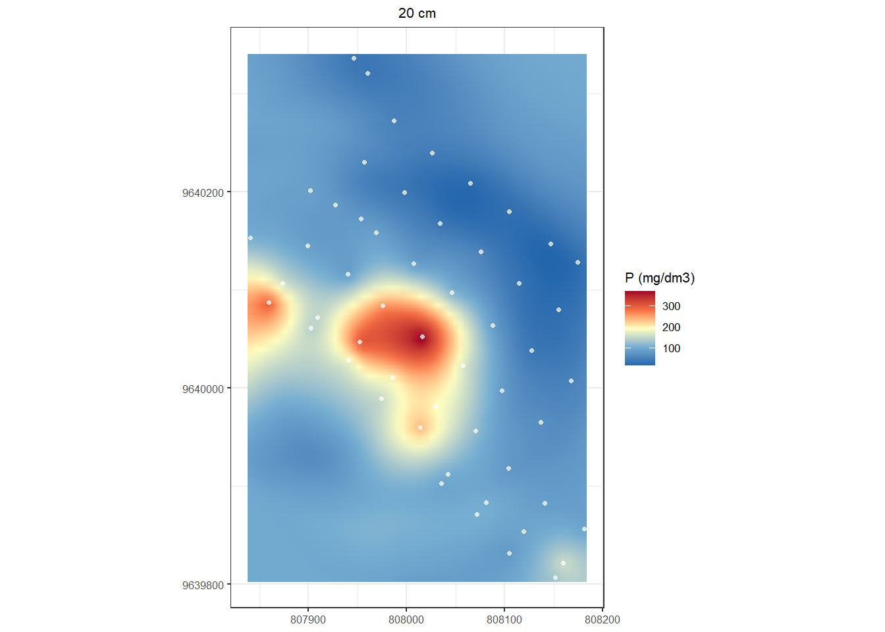
[[2]]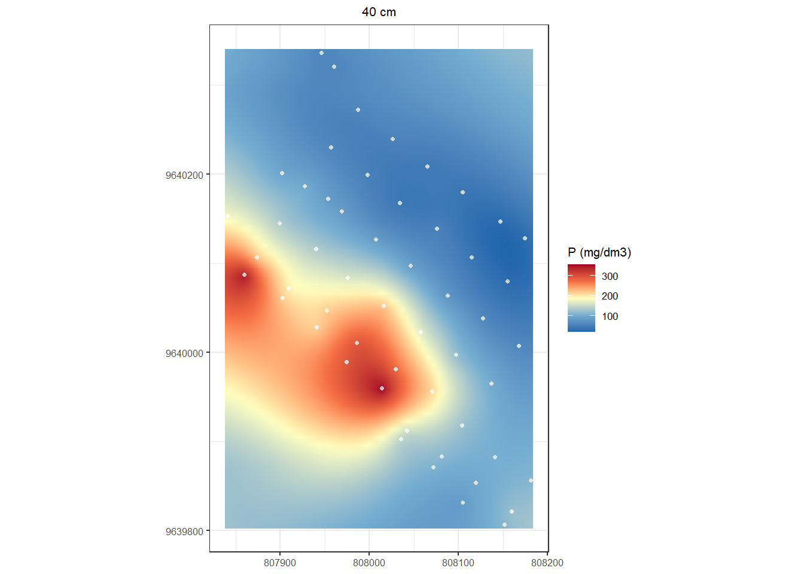
[[3]]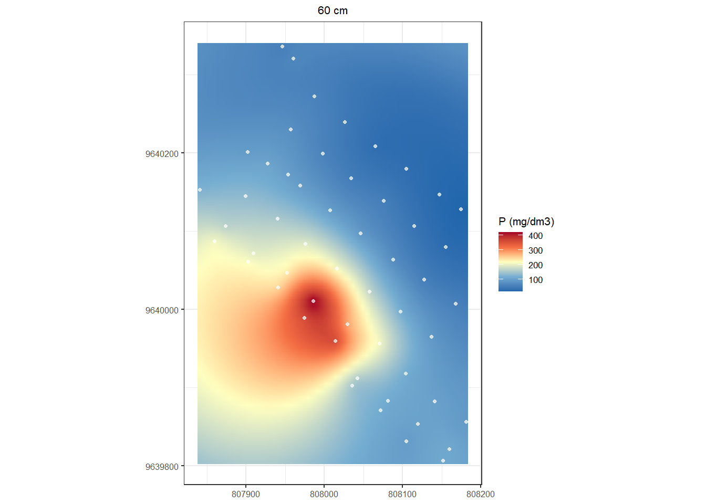
[[4]]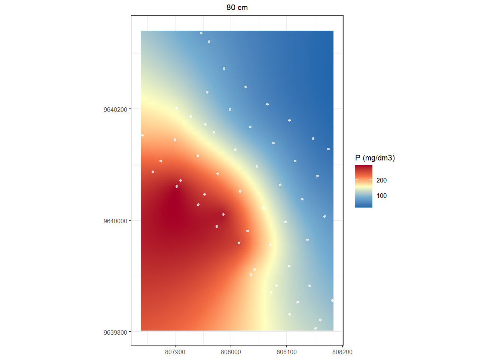
[[5]]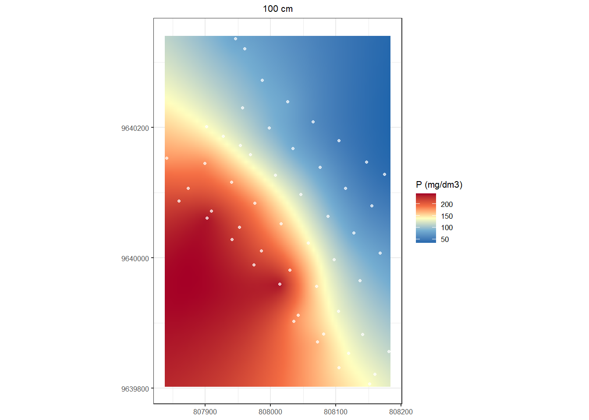
krig_Ca[[1]]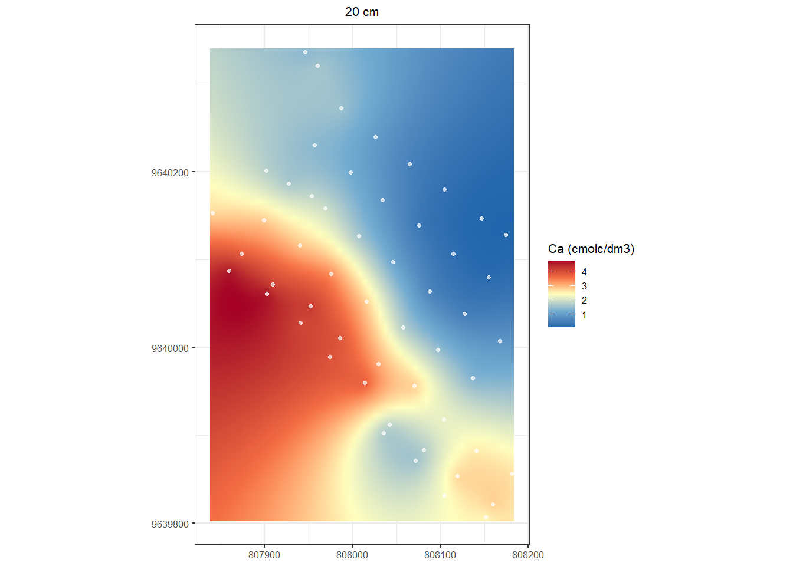
[[2]]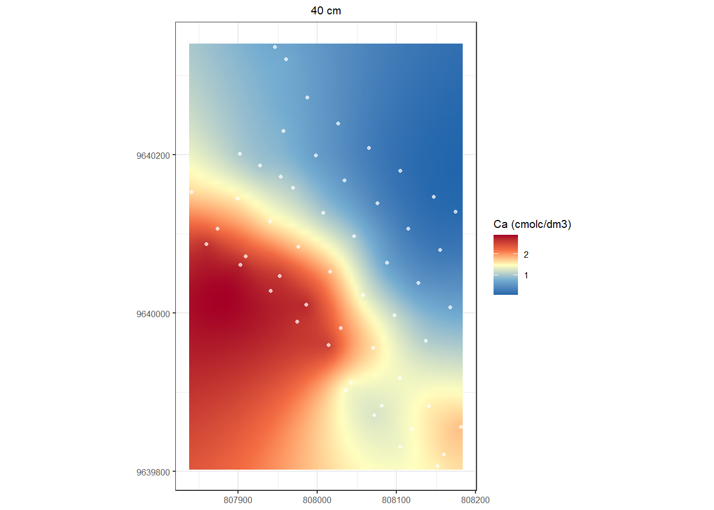
[[3]]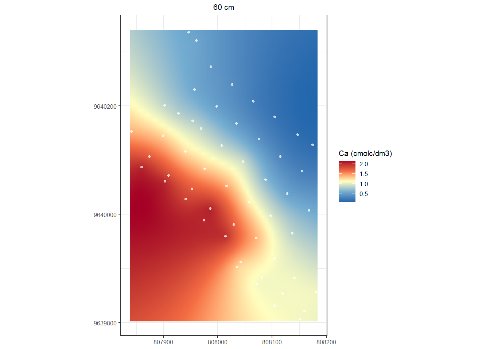
[[4]]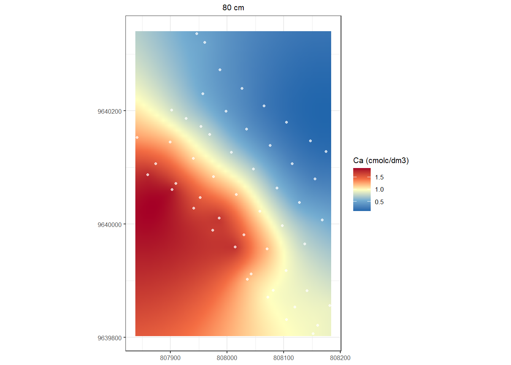
[[5]]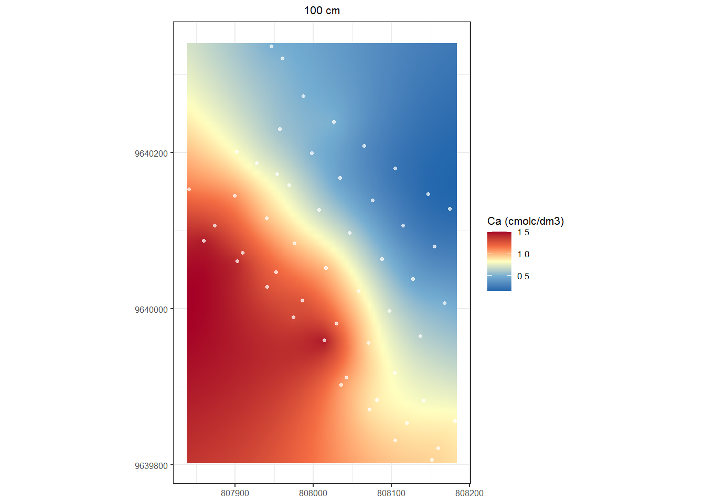
ext_ratio# A tibble: 265 × 18
`Coordinate X` `Coordinate Y` ID `Depth (cm)` `pH H2O` `pH K2O`
<dbl> <dbl> <dbl> <dbl> <dbl> <dbl>
1 807946. 9640337. 1 20 4.6 3.98
2 807960. 9640321 6 20 4.88 4.07
3 807987. 9640272. 11 20 5.32 4.43
4 807957. 9640230. 16 20 5.12 4.24
5 807927. 9640187. 21 20 5.03 4.13
6 807953. 9640172. 26 20 5.49 4.52
7 807902. 9640202. 31 20 4.89 4.08
8 807899. 9640145. 36 20 5.89 4.96
9 807841. 9640153. 41 20 4.86 4.02
10 807874. 9640107. 46 20 5.05 4.24
# ℹ 255 more rows
# ℹ 12 more variables: `P (mg/dm3)` <dbl>, `K (mg/dm3)` <dbl>,
# `Na (mg/dm3)` <dbl>, `Ca (cmolc/dm3)` <dbl>, `Mg (cmolc/dm3)` <dbl>,
# `Al (cmolc/dm3)` <dbl>, `H+Al(cmolc/dm3)` <dbl>, `Fe (mg/dm3)` <dbl>,
# `Zn (mg/dm3)` <dbl>, `Mn (mg/dm3)` <dbl>, `Cu (mg/dm3)` <dbl>,
# CaP_ratio <dbl>krig_CaP[[1]]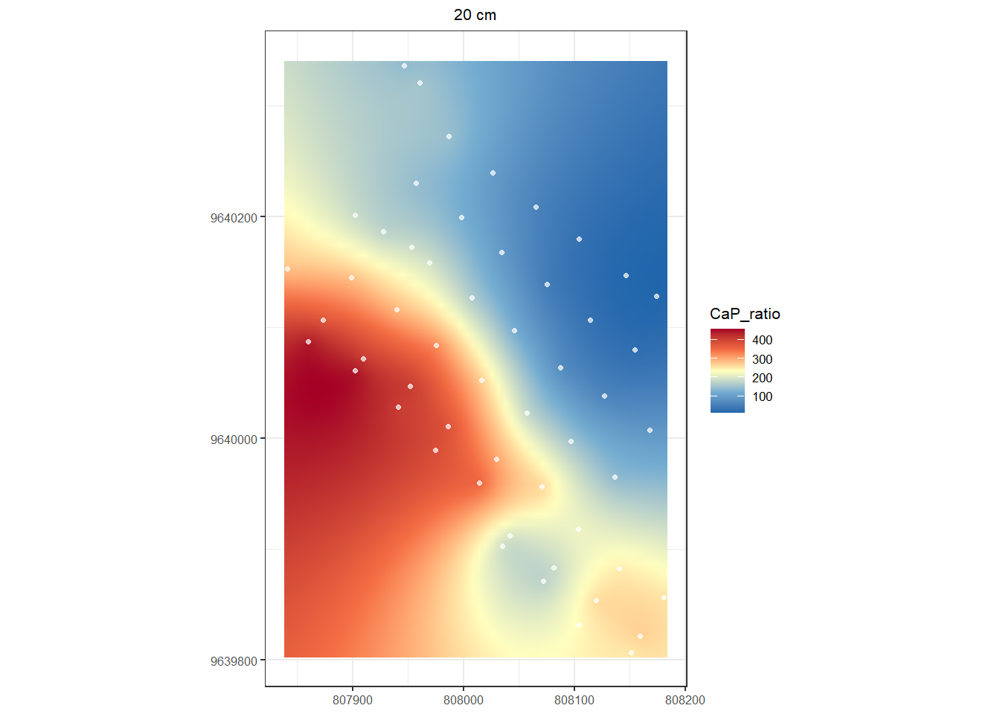
[[2]]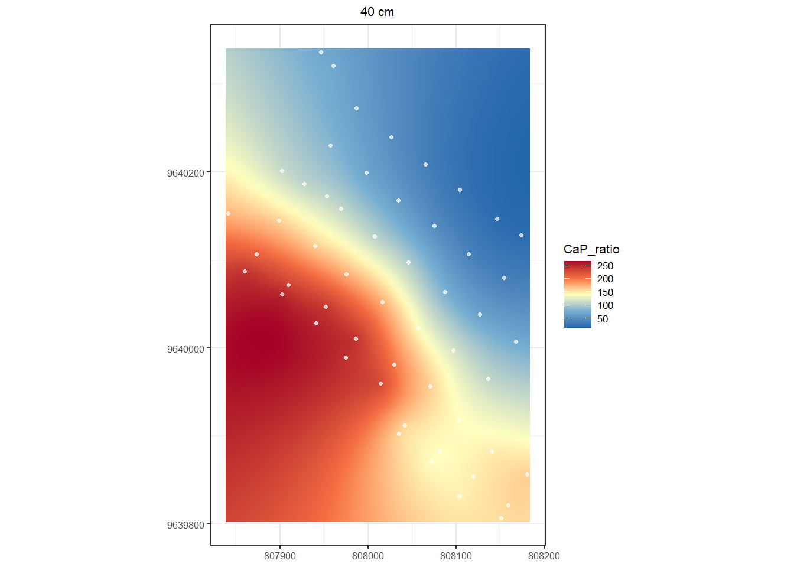
[[3]]
[[4]]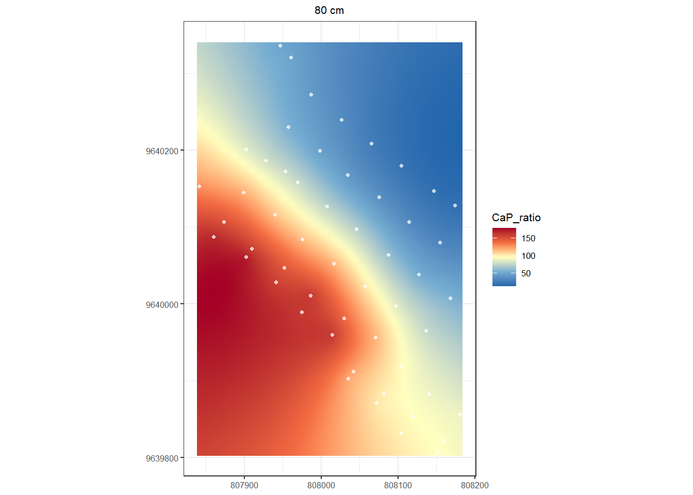
[[5]]#Figure 2 Ca/P ratio per profile and depth
fig2 <- (wrap_plots(krig_P, ncol = 1) |
wrap_plots(krig_Ca, ncol = 1) |
wrap_plots(krig_CaP, ncol = 1))+
plot_annotation(
title = "Figure 2 ~ Extractable P, Ca, and Ca/P ratio (kriging interpolation)",
subtitle = "Each row = one depth increment (20, 40, 60, 80, 100 cm); columns: P | Ca | Ca/P",
theme = theme(plot.title = element_text(face = "bold", size = 12), plot.subtitle = element_text(size = 9))
)
fig2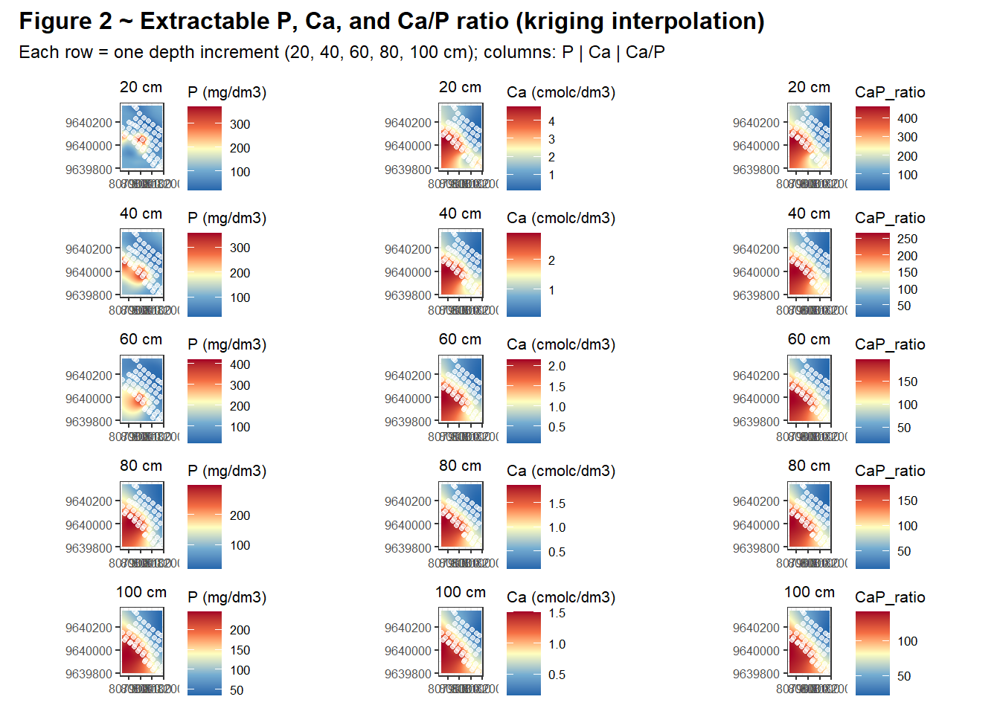
#Radio carbon dates and depth in taken samples
radio_raw<- d2[, 1:5]
colnames(radio_raw) <- c("depth_cm", "soil_type", "c14_cal_ybp", "ybp_se", "c_pool")
radiocarbon <- radio_raw %>%
filter(!is.na(depth_cm), !is.na(c_pool)) %>%
mutate(
depth_mid = depth_to_mid(depth_cm),
c14_cal_ybp = case_when(c14_cal_ybp == "modern" ~ 0, c14_cal_ybp == "nd" ~ NA_real_, TRUE ~ as.numeric(c14_cal_ybp)),
ybp_se = as.numeric(ybp_se)
)%>%
filter(!is.na(depth_mid))Warning: There was 1 warning in `mutate()`.
ℹ In argument: `c14_cal_ybp = case_when(...)`.
Caused by warning:
! NAs introduced by coercionradio_raw# A tibble: 20 × 5
depth_cm soil_type c14_cal_ybp ybp_se c_pool
<chr> <chr> <chr> <dbl> <chr>
1 0-10 ADE 265 15 PyC
2 30-40 Ultisol 2225 20 PyC
3 30-40 ADE 4960 70 PyC
4 40-50 Ultisol 4440 70 PyC
5 80-90 ADE 6420 50 PyC
6 80-90 Ultisol 5430 20 PyC
7 90-100 Ultisol 7630 80 PyC
8 0-10 ADE modern NA SOC
9 0-10 Ultisol modern NA SOC
10 30-40 ADE 880 20 SOC
11 40-50 ADE 1190 20 SOC
12 40-50 Ultisol 805 15 SOC
13 50-60 ADE 1355 15 SOC
14 90-100 ADE 2240 15 SOC
15 80-90 Ultisol 1285 15 SOC
16 <NA> <NA> <NA> NA <NA>
17 <NA> <NA> <NA> NA <NA>
18 <NA> <NA> <NA> NA <NA>
19 <NA> <NA> <NA> NA <NA>
20 <NA> <NA> <NA> NA <NA> # Carbon isotopes / Soil Organic Carbon / PyC
carbon_raw <- d2[, 7:14]
colnames(carbon_raw) <- c("soil_type", "depth_cm", "avg_d13C", "d13C_se", "avg_SOC_g_kg", "SOC_se", "C4_pct", "PyC_g_kg")
carbon <- carbon_raw %>%
filter(!is.na(soil_type)) %>%
mutate(depth_mid = depth_to_mid(depth_cm),
soil_type = trimws(soil_type))%>%
filter(!is.na(depth_mid))
carbon# A tibble: 20 × 9
soil_type depth_cm avg_d13C d13C_se avg_SOC_g_kg SOC_se C4_pct PyC_g_kg
<chr> <chr> <dbl> <dbl> <dbl> <dbl> <dbl> <dbl>
1 ADE 0-10 -27.2 0.38 23.7 1.5 0 1.04
2 ADE 10-20 -26 0.68 21.3 0.7 0 1.52
3 ADE 20-30 -25.8 0.59 17.9 1.7 1.2 1.37
4 ADE 30-40 -25.2 0.14 13.2 1.6 5.5 1.01
5 ADE 40-50 -24.4 0.42 11.3 1.8 10.9 1.43
6 ADE 50-60 -24.9 0.3 9.4 1.5 7.3 1.03
7 ADE 60-70 -24.7 0.26 9.2 1.7 8.8 0.93
8 ADE 70-80 -24.3 0.22 5.9 1.5 11.1 0.37
9 ADE 80-90 -24.7 0.5 5.5 0.3 8.6 0.23
10 ADE 90-100 -23.2 1.02 4.7 0.9 18.9 0.21
11 Ultisol 0-10 -26.4 0.35 18.9 0.6 0 NA
12 Ultisol 10-20 -24.8 0.25 15.2 0.3 8 NA
13 Ultisol 20-30 -25 0.18 13.2 0.2 6.9 0.13
14 Ultisol 30-40 -25.4 0.25 11.7 0.5 4.1 0.12
15 Ultisol 40-50 -25.8 0.37 9.5 0.1 1 0.19
16 Ultisol 50-60 -25.8 0.17 8.1 0.4 1.6 NA
17 Ultisol 60-70 -25.6 0.17 6.2 0.3 2.4 NA
18 Ultisol 70-80 -25.7 0.35 6.8 0.1 1.8 0.07
19 Ultisol 80-90 -25.7 0.38 6.4 0.3 2.3 NA
20 Ultisol 90-100 -25.7 0.29 5 0.6 2.2 0.05
# ℹ 1 more variable: depth_mid <dbl># Sr / Nd isotopes relationship
iso_cols <- d2[, 16:24]
colnames(iso_cols) <- c("soil_type", "depth_cm", "Sm_ppm", "Nd_ppm", "Sm147_Nd144", "eNd0", "TDM-Ga", "Sr87_86", "Nd143_144")
isotopes<- iso_cols %>%
filter(!is.na(soil_type)) %>%
mutate(soil_type = trimws(soil_type),
depth_cm = trimws(depth_cm))
isotopes# A tibble: 16 × 9
soil_type depth_cm Sm_ppm Nd_ppm Sm147_Nd144 eNd0 `TDM-Ga` Sr87_86
<chr> <chr> <dbl> <dbl> <dbl> <dbl> <dbl> <dbl>
1 ADE 0-10 3.23 15.6 0.125 -9.99 1.57 0.714
2 ADE 0-10 4.03 23.2 0.105 -11.5 1.38 0.714
3 ADE 0-10 2.57 13.4 0.116 -10.9 1.49 0.714
4 Ultisol 0-10 3.13 16.2 0.117 -11.3 1.54 0.715
5 Ultisol 0-10 NA NA NA NA NA 0.715
6 ADE 40-50 4.84 27.7 0.105 -11.7 1.4 0.714
7 ADE 40-50 3.20 16.9 0.114 -11.4 1.5 0.714
8 Ultisol 40-50 3.92 21.5 0.110 -11.8 1.48 0.715
9 Ultisol 40-50 4.50 21.5 0.126 -12.1 1.78 0.715
10 Ultisol 40-50 3.08 17.4 0.107 -12.2 1.46 0.715
11 ADE 90-100 6.03 34.2 0.107 -10.6 1.34 0.714
12 ADE 90-100 NA NA NA NA NA 0.714
13 ADE 90-100 3.96 22.8 0.105 -11.8 1.41 0.715
14 Ultisol 90-100 3.96 22.3 0.107 -11.2 1.39 NA
15 Ultisol 90-100 4.15 24.0 0.104 -11.8 1.4 0.716
16 Ultisol 90-100 3.98 22.4 0.108 -11.9 1.45 NA
# ℹ 1 more variable: Nd143_144 <dbl># Total P and Ca according to bulk density
stocks_raw <- d2[, 26:32]
colnames(stocks_raw) <- c("soil_type", "depth_cm", "avg_Ca_mg_kg", "Ca_se", "avg_P_mg_kg", "P_se", "bulk_density")
stocks <- stocks_raw %>%
filter(!is.na(soil_type))%>%
mutate(soil_type = trimws(soil_type),
depth_mid = depth_to_mid(depth_cm)) %>%
filter(!is.na(depth_mid)) %>%
mutate(
Ca_stock_Mg_ha = avg_Ca_mg_kg * bulk_density * 0.1 / 100,
P_stock_Mg_ha = avg_P_mg_kg * bulk_density * 0.1 / 100,
Ca_se_Mg_ha = Ca_se * bulk_density * 0.1 / 100,
P_se_Mg_ha = P_se * bulk_density * 0.1 / 100
)
stocks# A tibble: 20 × 12
soil_type depth_cm avg_Ca_mg_kg Ca_se avg_P_mg_kg P_se bulk_density
<chr> <chr> <dbl> <dbl> <dbl> <dbl> <dbl>
1 ADE 0-10 2108. 180. 1244. 165. 1.12
2 ADE 10-20 1604. 167. 1353. 173. 1.18
3 ADE 20-30 1498. 224. 1684. 234. 1.25
4 ADE 30-40 1406. 199. 1825. 190. 1.27
5 ADE 40-50 1308. 167. 1846. 212. 1.28
6 ADE 50-60 1276. 224. 1872. 263. 1.27
7 ADE 60-70 1153. 193. 1780. 247. 1.28
8 ADE 70-80 1005. 124. 1673. 246. 1.28
9 ADE 80-90 1114. 231. 1825. 323. 1.29
10 ADE 90-100 593. 57.7 1509. 228. 1.31
11 Ultisol 0-10 155. 40.1 314. 50.1 1.18
12 Ultisol 10-20 115. 30.4 335. 52.6 1.21
13 Ultisol 20-30 77.3 4.76 318. 36.5 1.26
14 Ultisol 30-40 108. 28.5 360. 54.9 1.28
15 Ultisol 40-50 93.2 13.6 301. 24.7 1.29
16 Ultisol 50-60 124. 36.4 346. 56.4 1.29
17 Ultisol 60-70 73.4 5.45 310. 34.7 1.31
18 Ultisol 70-80 88.2 15.0 299. 33.1 1.33
19 Ultisol 80-90 108. 31.2 317. 54.0 1.33
20 Ultisol 90-100 76.2 9.29 285. 39.0 1.35
# ℹ 5 more variables: depth_mid <dbl>, Ca_stock_Mg_ha <dbl>,
# P_stock_Mg_ha <dbl>, Ca_se_Mg_ha <dbl>, P_se_Mg_ha <dbl>#Nutrient stocks
total_stocks <- stocks %>%
group_by(soil_type)%>%
summarise(Total_Ca_Mg_ha = sum(Ca_stock_Mg_ha, na.rm = TRUE),
Total_P_Mg_ha = sum(P_stock_Mg_ha, na.rm = TRUE),
.groups = "drop"
)
excess <- total_stocks%>%
pivot_wider(names_from = soil_type,
values_from = c(Total_Ca_Mg_ha, Total_P_Mg_ha)) %>%
mutate(P_excess_Mg_ha = Total_P_Mg_ha_ADE - Total_P_Mg_ha_Ultisol,
Ca_excess_Mg_ha = Total_Ca_Mg_ha_ADE - Total_Ca_Mg_ha_Ultisol,
Total_excess = P_excess_Mg_ha + Ca_excess_Mg_ha
)
cat("\n=== Total Nutrient Stocks 0-100 cm (Mg/ha) ===\n")
=== Total Nutrient Stocks 0-100 cm (Mg/ha) ===print(total_stocks)# A tibble: 2 × 3
soil_type Total_Ca_Mg_ha Total_P_Mg_ha
<chr> <dbl> <dbl>
1 ADE 16.2 20.9
2 Ultisol 1.30 4.08cat("\n=== Nutrient Excess ADE vs Ultisol ===\n")
=== Nutrient Excess ADE vs Ultisol ===print(excess)# A tibble: 1 × 7
Total_Ca_Mg_ha_ADE Total_Ca_Mg_ha_Ultisol Total_P_Mg_ha_ADE
<dbl> <dbl> <dbl>
1 16.2 1.30 20.9
# ℹ 4 more variables: Total_P_Mg_ha_Ultisol <dbl>, P_excess_Mg_ha <dbl>,
# Ca_excess_Mg_ha <dbl>, Total_excess <dbl># P profile
p_profile <- make_depth_profile(stocks, "avg_P_mg_kg", "P_se",
"Total P (mg/kg)", "Total Phosphorus")Warning: `geom_errorbarh()` was deprecated in ggplot2 4.0.0.
ℹ Please use the `orientation` argument of `geom_errorbar()` instead.# Ca profile
ca_profile <- make_depth_profile(stocks, "avg_Ca_mg_kg", "Ca_se",
"Total Ca (mg/kg)", "Total Calcium")
##bar data for graphs
bar_data <- total_stocks%>%
pivot_longer(-soil_type, names_to = "element", values_to = "stock") %>%
mutate(element = ifelse(grepl("Ca", element), "Ca (Mg/ha)", "P (Mg/ha)"))
p_profile`height` was translated to `width`.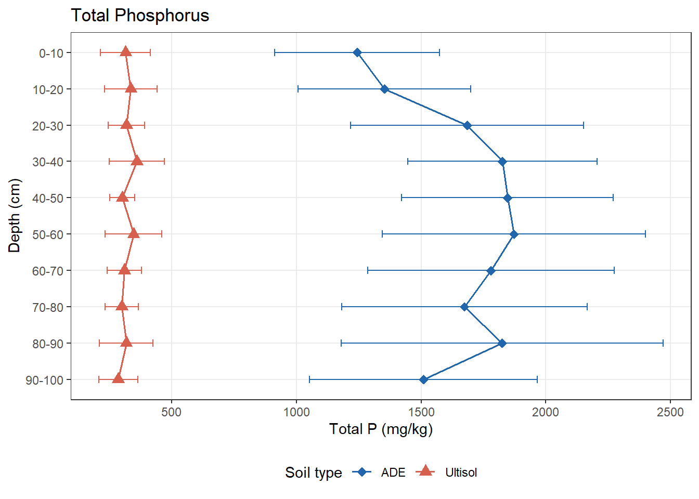
ca_profile`height` was translated to `width`.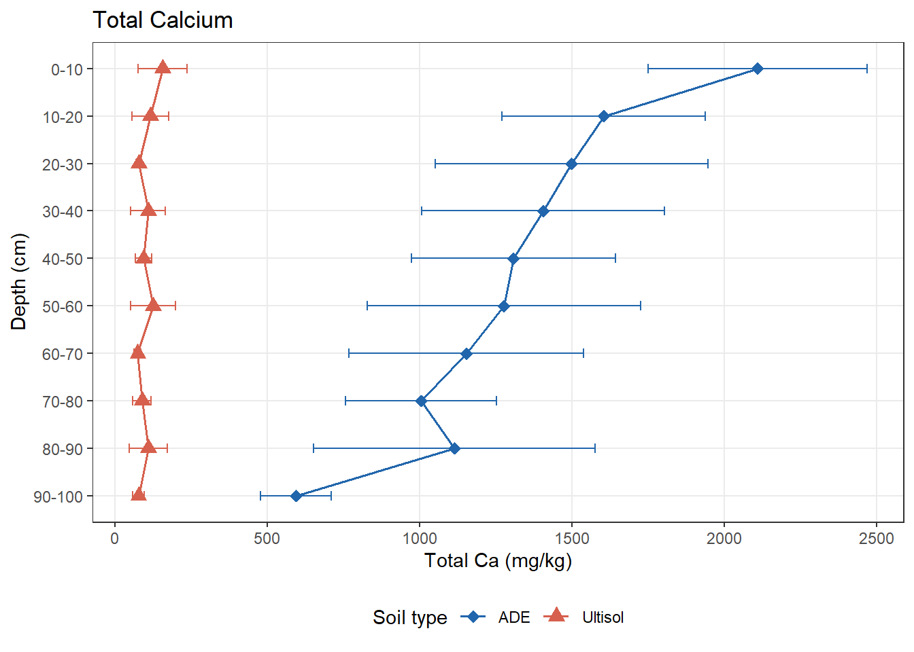
bar_data# A tibble: 4 × 3
soil_type element stock
<chr> <chr> <dbl>
1 ADE Ca (Mg/ha) 16.2
2 ADE P (Mg/ha) 20.9
3 Ultisol Ca (Mg/ha) 1.30
4 Ultisol P (Mg/ha) 4.08#Let's go to the barplot
bar_plot<- ggplot(bar_data, aes(x = soil_type, y = stock, fill = soil_type))+
geom_col(width = 0.6, color = "black", linewidth = 0.3)+
geom_text(aes(label = round(stock, 1)), vjust = -0.4, size = 3.5)+
facet_wrap(~element, scales = "free_y")+
scale_fill_manual(values = pal)+
labs(x = NULL, y = "Stock (Mg/ha)", title = "Total stocks (0-100 cm)")+
theme_ade + theme(legend.position = "none")
bar_plot # In this case the barplot presents a wider view and detail, this chart will be included in Figure 3 as part of the analysis of Total P and Ca in ADE and Ultisols. 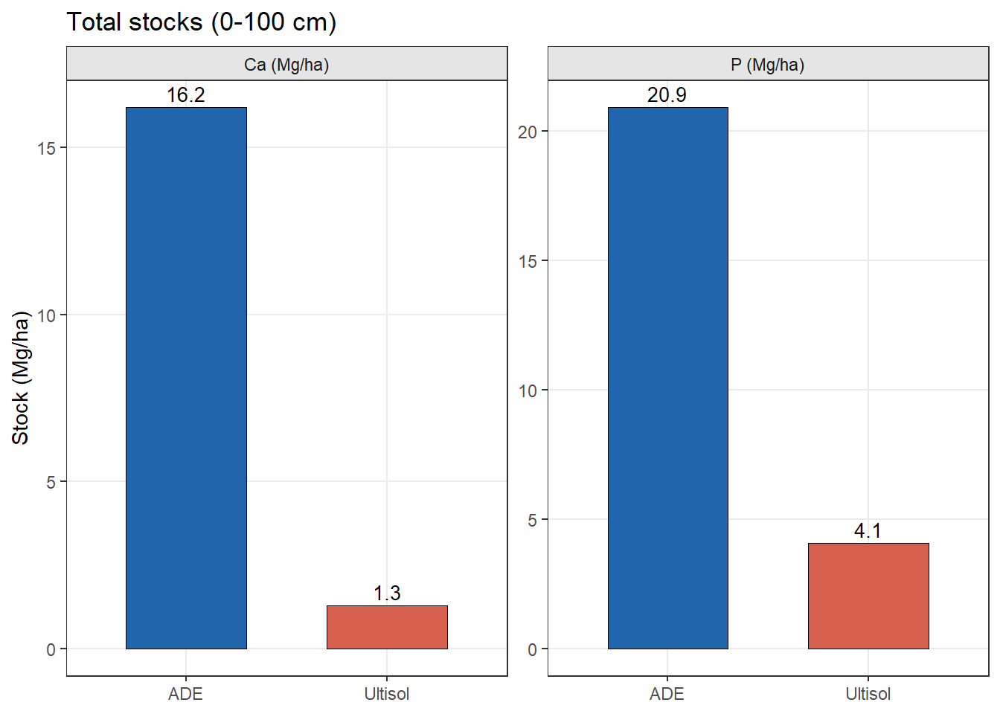
#Figure 3
fig3 <- (p_profile | ca_profile | bar_plot)+
plot_layout(guides = "collect")+
plot_annotation(
title = "Figure 3 - Total P and Ca in ADE and Ultisol profiles",
theme = theme(plot.title = element_text(face = "bold", size = 13))
)&
theme(legend.position = "bottom")
fig3`height` was translated to `width`.
`height` was translated to `width`.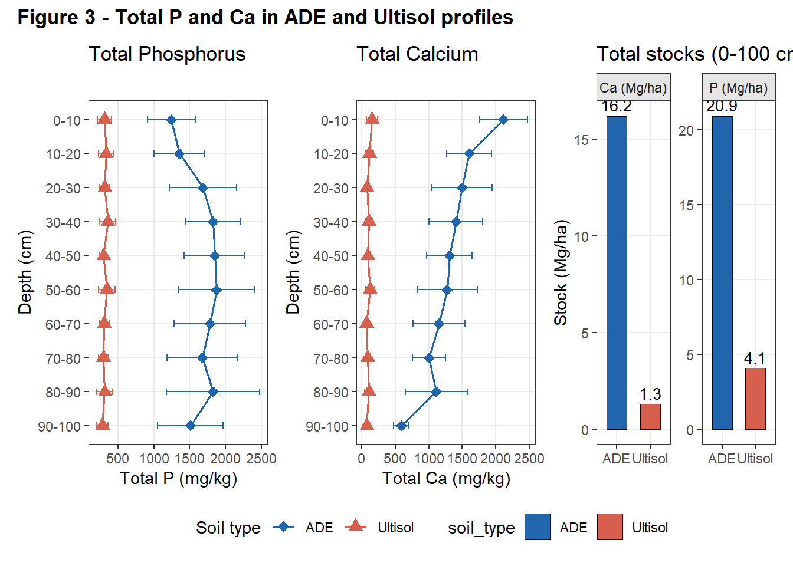
#SOC Plot
soc_plot <- make_depth_profile(carbon, "avg_SOC_g_kg", "SOC_se", "Total Organic C (g/kg)", "SOC")#d13C
d13C_plot <- ggplot(carbon, aes(x = avg_d13C, y = depth_mid, color = soil_type, shape = soil_type))+
geom_point(size = 3)+
geom_path(linewidth = 0.7)+
geom_errorbarh(aes(xmin = avg_d13C - 2*d13C_se,
xmax = avg_d13C + 2*d13C_se), height =2)+
scale_y_reverse(breaks = seq(5,95,10), labels = depth_labels)+
scale_color_manual(values = pal, name = "Soil type")+
scale_shape_manual(values = c("ADE"=18, "Ultisol" = 17), name = "Soil type")+
labs(x = "δ¹³C (‰)", y = "Depth (cm)", title = "δ¹³C Bulk Organic Matter")+
theme_ade
d13C_plot`height` was translated to `width`.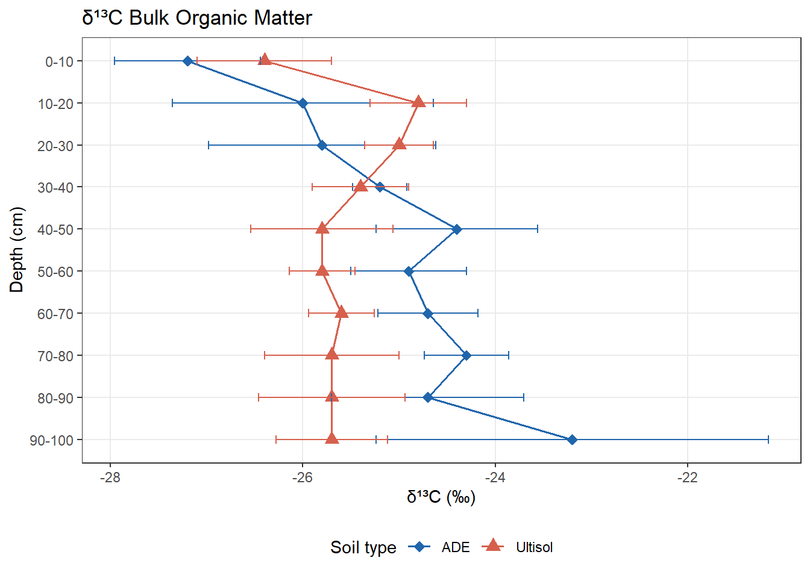
#PyC plot
pyc_plot <- ggplot(carbon %>%
filter(!is.na(PyC_g_kg)), aes(x = PyC_g_kg, y = depth_mid, color = soil_type, shape = soil_type))+
geom_point(size = 3)+
geom_path(linewidth = 0.7)+
scale_y_reverse(breaks = seq(5,95,10), labels = depth_labels)+
scale_color_manual(values = pal, name = "Soil type")+
scale_shape_manual(values = c("ADE"=18, "Ultisol"=17), name = "Soil type")+
labs(x = "Pyrogenic C (g/kg)", y = "Depth (cm)", title = "Pyrogenic Carbon")+
theme_ade
pyc_plot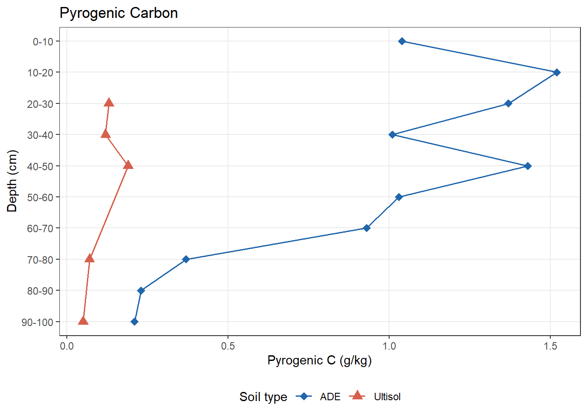
#C4 plot
c4_plot <- ggplot(carbon, aes(x = C4_pct, y = depth_mid, color = soil_type, shape = soil_type))+
geom_point(size = 3)+
geom_path(linewidth = 0.7)+
scale_y_reverse(breaks = seq(5,95,10), labels = depth_labels)+
scale_color_manual(values = pal, name = "Soil type")+
scale_shape_manual(values = c("ADE"=18, "Ultisol"=17), name = "Soil type")+
labs(x = "C4-derived OC (%)", y = "Depth (cm)", title = "C4 Grass Contribution")+
theme_ade
c4_plot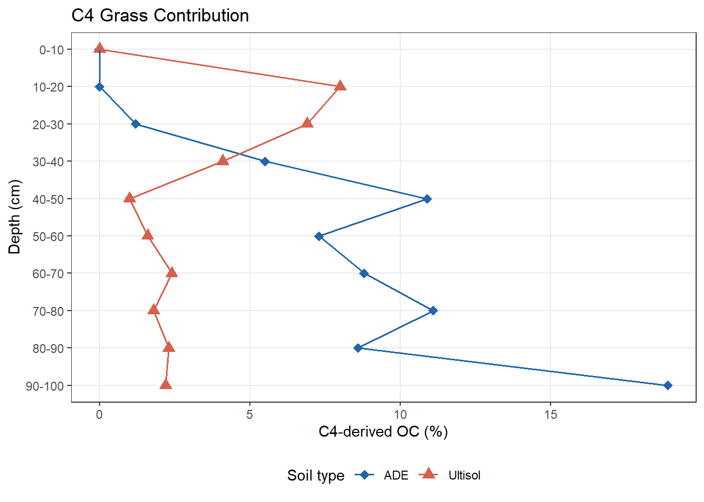
#Figure 4 (it was time!)
fig4 <- (soc_plot | d13C_plot | pyc_plot | c4_plot)+
plot_layout(guides = "collect")+
plot_annotation(
title = "Figure 4 - Carbon pools and stable isotope ratios",
theme = theme(plot.title = element_text(face = "bold", size = 13))
)&
theme(legend.position = "bottom")
fig4`height` was translated to `width`.
`height` was translated to `width`.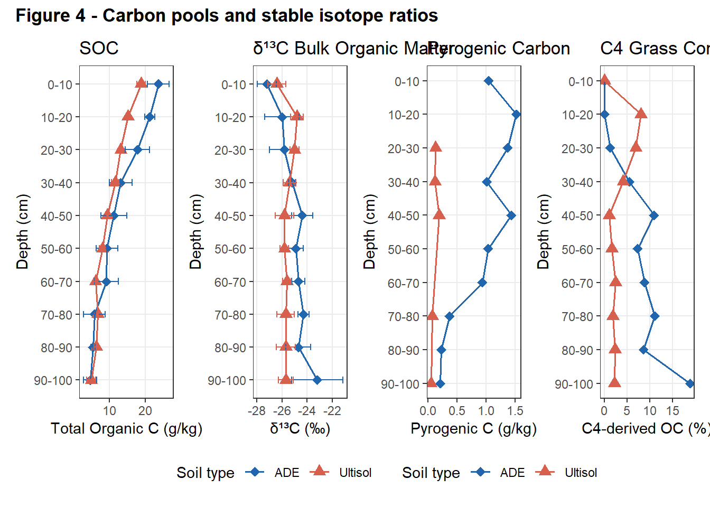
#radio_soc and radio_pyc
radio_soc <- radiocarbon %>%
filter(c_pool == "SOC")%>%
arrange(depth_mid)
radio_pyc <- radiocarbon %>%
filter(c_pool == "PyC") %>%
arrange(depth_mid)# Figure 5
fig5<- ggplot()+
geom_line(data = radio_soc, aes(x = c14_cal_ybp, y = depth_mid),
linetype = "solid", color = "black", linewidth = 0.8)+
geom_line(data = radio_pyc, aes(x = c14_cal_ybp, y = depth_mid), linetype = "dashed", color = "black", linewidth = 0.8)+
geom_point(data = radio_soc, aes(x = c14_cal_ybp, y = depth_mid, color= soil_type, shape = "Bulk SOC"), size = 4)+
geom_point(data = radio_pyc, aes(x = c14_cal_ybp, y = depth_mid, color= soil_type, shape = "Pyrogenic C"), size = 4)+
geom_errorbarh(data = radiocarbon %>% filter(!is.na(ybp_se)), aes(y = depth_mid, xmin = c14_cal_ybp - ybp_se, xmax = c14_cal_ybp + ybp_se), height = 2, color="grey50")+
annotate("text", x=7900, y = 91,
label = "~7630 +- 80 ybp\n(earliest PyC input)",
size = 3.2, hjust = 1, color = "#2166ac")+
scale_y_reverse(limits = c(100, 0), breaks = seq(0,100,10))+
scale_color_manual(values = pal, name = "Soil type")+
scale_shape_manual(values = c("Bulk SOC"=16, "Pyrogenic C"=17), name="Carbon pool")+
labs(x = "Calibrated 14C age (years before present)", y = "Soil depth (cm)", title = "Figure 5 ~ Age-depth model for bulk SOC and pyrogenic carbon")+
theme_ade + theme(plot.title = element_text(face = "bold"))
fig5`height` was translated to `width`.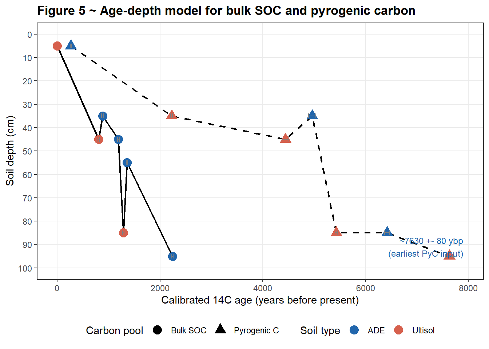
iso_long<- isotopes %>%
dplyr::select(soil_type, Sr87_86, Nd143_144)%>%
dplyr::filter(!is.na(soil_type))%>%
pivot_longer(cols = c(Sr87_86, Nd143_144), names_to = "isotope", values_to = "value")%>%
dplyr::filter(!is.na(value)) %>%
dplyr::mutate(isotope = dplyr::recode(isotope, Sr87_86 = "87Sr/86Sr", Nd143_144 = "143Nd/144Nd"), soil_type = factor(soil_type, levels = c("ADE", "Ultisol"))) # In these lines I used dplyr as a way to solve conflicts for making methods due to the diversity and quantity of installed packages. fig6 <- ggplot(iso_long, aes(x = soil_type, y = value, fill = soil_type, color = soil_type))+
geom_boxplot(alpha = 0.4, outlier.shape = NA, linewidth = 0.8)+
geom_jitter(width = 0.12, size = 2.5, alpha = 0.8)+
facet_wrap(~isotope, scales = "free_y")+
scale_fill_manual(values = pal)+
scale_color_manual(values = pal)+
labs(x = NULL, y = "Isotope ratios of Sr, Nd, and eNd(0)")+
theme_ade + theme(legend.position = "none", plot.title = element_text(face = "bold"))
fig6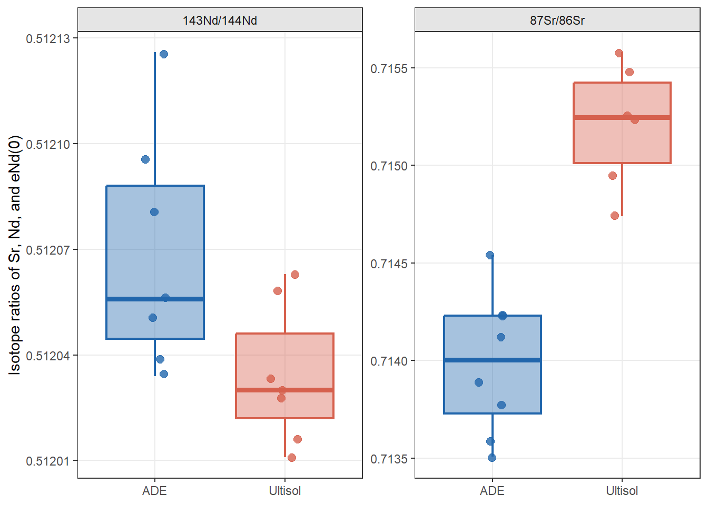
# Equation 2: Two-end-member C4/C3 mixing model
## C4 = Ct * (deltat - delta3) / (delta 4 - delta3)
delta3 <- -25.9 # C3 trees
delta4 <- -11.2 # C4 grasses
carbon <- carbon %>%
mutate(C4_fraction_eq2 = pmax(0, pmin(100, (avg_d13C - delta3) / (delta4 - delta3) * 100)))
cat("\n=== Equation 2: C4 mixing model vs. reported values ===\n")
=== Equation 2: C4 mixing model vs. reported values ===carbon %>%
dplyr::select(soil_type, depth_cm, avg_d13C, C4_pct, C4_fraction_eq2) %>% print(n=20)# A tibble: 20 × 5
soil_type depth_cm avg_d13C C4_pct C4_fraction_eq2
<chr> <chr> <dbl> <dbl> <dbl>
1 ADE 0-10 -27.2 0 0
2 ADE 10-20 -26 0 0
3 ADE 20-30 -25.8 1.2 0.680
4 ADE 30-40 -25.2 5.5 4.76
5 ADE 40-50 -24.4 10.9 10.2
6 ADE 50-60 -24.9 7.3 6.80
7 ADE 60-70 -24.7 8.8 8.16
8 ADE 70-80 -24.3 11.1 10.9
9 ADE 80-90 -24.7 8.6 8.16
10 ADE 90-100 -23.2 18.9 18.4
11 Ultisol 0-10 -26.4 0 0
12 Ultisol 10-20 -24.8 8 7.48
13 Ultisol 20-30 -25 6.9 6.12
14 Ultisol 30-40 -25.4 4.1 3.40
15 Ultisol 40-50 -25.8 1 0.680
16 Ultisol 50-60 -25.8 1.6 0.680
17 Ultisol 60-70 -25.6 2.4 2.04
18 Ultisol 70-80 -25.7 1.8 1.36
19 Ultisol 80-90 -25.7 2.3 1.36
20 Ultisol 90-100 -25.7 2.2 1.36 #Equation 3 Sr isotope mixing - river sediment contribution to ADE
sr_ADE <- mean(isotopes$Sr87_86[isotopes$soil_type == "ADE"], na.rm = TRUE)
Sr_Ultisol <- mean(isotopes$Sr87_86[isotopes$soil_type == "Ultisol"], na.rm = TRUE)
Sr_river <- 0.709 #Solimoes River
f_river <- (sr_ADE - Sr_Ultisol) / (Sr_river - Sr_Ultisol)
cat(sprintf("\n=== Equation 3 Sr Mixing Model ===\n Sr ADE: %.6f | Sr Ultisol: %.6f | Sr River: %.3f\n River contribution to ADE: %.1f%%\n", sr_ADE, Sr_Ultisol, Sr_river, f_river * 100))
=== Equation 3 Sr Mixing Model ===
Sr ADE: 0.713985 | Sr Ultisol: 0.715205 | Sr River: 0.709
River contribution to ADE: 19.7%#Equation 4: fish protein / population density model
excess_PlusCa <- as.numeric(excess["Total_excess"]) # Mg/ha
fish_PCa_fraction <- 0.06 # P+Ca = 6% of dry fish mass
water_fraction <- 0.80 # fresh fish ~80% water
util_fraction <- 0.50 # assuming that 50% of edible portion was added to the soil
fish_PCa_per_kg_fresh <- (1 - water_fraction) * fish_PCa_fraction * util_fraction
density_range <- c(20, 60) # people per ha
fish_g_per_day_range <- c(90, 219) # g fresh fish per person per day
occ_years <- outer(density_range, fish_g_per_day_range, function(d, f) {
annual_input_Mg_ha <- d*f*365 / 1e9 * fish_PCa_per_kg_fresh * 1e6
excess_PlusCa / annual_input_Mg_ha
})
dimnames(occ_years) <- list(
paste0(density_range, " people/ha"),
paste0(fish_g_per_day_range, " g fish/day")
)
cat("\n === Equation 4: Estimated occupation time (years) to form ADE from fish waste ===\n")
=== Equation 4: Estimated occupation time (years) to form ADE from fish waste ===print(round(occ_years, 0)) 90 g fish/day 219 g fish/day
20 people/ha 8 3
60 people/ha 3 1#Colnames
colnames(d3)[1:3] <- c("sample_code", "depth_cm", "soil_type")
colnames(d3) <- trimws(colnames(d3))
#Total elements and maximum contrast profiles
d3 <- d3 %>%
mutate(
soil_type = case_when(soil_type == "Ulti" ~ "Ultisol", TRUE ~ soil_type),
soil_type = factor(soil_type, levels = c("ADE", "Ultisol"))
)elem_cols <- colnames(d3)[4:ncol(d3)] # 28 element columns
tot <- d3 %>%
dplyr::mutate(across(all_of(elem_cols), as.numeric)) %>%
dplyr::filter(!is.na(sample_code))Warning: There were 28 warnings in `dplyr::mutate()`.
The first warning was:
ℹ In argument: `across(all_of(elem_cols), as.numeric)`.
Caused by warning:
! NAs introduced by coercion
ℹ Run `dplyr::last_dplyr_warnings()` to see the 27 remaining warnings.cat(sprintf("\nDataset 3: %d rows x %d cols | Soil types: %s | Depths: %s\n",
nrow(tot), ncol(tot),
paste(levels(tot$soil_type), collapse=", "), paste(sort(unique(tot$depth_cm)), collapse = ", ")))
Dataset 3: 300 rows x 31 cols | Soil types: ADE, Ultisol | Depths: 10, 20, 30, 40, 50, 60, 70, 80, 90, 100#Supplementary Table 1: Concentrations significantly greater in ADE
ttest_results <- map_dfr(elem_cols, function(el)
{
ade<- tot %>%
filter(soil_type == "ADE")%>%
pull(el)
ult <- tot%>%
filter(soil_type == "Ultisol") %>% pull(el)
tt <- t.test(ade, ult, var.equal = FALSE)
tibble(
Element = el,
ADE_mean = mean(ade, na.rm = TRUE),
Ultisol_mean = mean(ult, na.rm = TRUE),
Ratio_ADE_Ult = mean(ade, na.rm = TRUE) / mean(ult, na.rm = TRUE),
t_stat = tt$statistic,
df = tt$parameter,
p_value = tt$p.value,
sig = case_when(tt$p.value<0.001~"***", tt$p.value<0.01~"**", tt$p.value<0.05~"*", TRUE~"ns"),
ADE_higher = mean(ade, na.rm=TRUE) > mean(ult, na.rm=TRUE)
)
}) %>% arrange(p_value)
cat("\n=== Supplementary Table 1 ~ t-tests: ADE vs Ultisol ===\n")
=== Supplementary Table 1 ~ t-tests: ADE vs Ultisol ===print(ttest_results, n=28)# A tibble: 28 × 9
Element ADE_mean Ultisol_mean Ratio_ADE_Ult t_stat df p_value sig
<chr> <dbl> <dbl> <dbl> <dbl> <dbl> <dbl> <chr>
1 P 1661. 318. 5.22 23.9 159. 1.47e-54 ***
2 Cs 0.587 0.0727 8.07 23.2 150. 1.50e-51 ***
3 Rb 5.74 0.585 9.80 22.9 151. 5.06e-51 ***
4 Cu 11.0 1.58 6.97 22.6 154. 9.74e-51 ***
5 Ba 83.4 17.3 4.83 20.5 153. 9.85e-46 ***
6 Sr 34.5 19.7 1.75 18.1 206. 2.65e-44 ***
7 Zn 43.2 8.24 5.24 19.2 168. 3.14e-44 ***
8 Tl 0.0673 0.0124 5.44 19.7 152. 9.21e-44 ***
9 Mg 323. 108. 2.98 17.2 163. 1.68e-38 ***
10 K 487. 104. 4.70 16.7 157. 1.07e-36 ***
11 Li 3.03 1.29 2.35 16.6 162. 1.21e-36 ***
12 Cd 0.709 0.0716 9.90 16.9 149. 1.97e-36 ***
13 Se 1.06 1.48 0.717 -14.0 269. 7.15e-34 ***
14 Mn 261. 105. 2.50 15.5 158. 1.56e-33 ***
15 Co 1.04 0.632 1.64 14.2 180. 2.40e-31 ***
16 Ca 1306. 102. 12.8 14.2 151. 1.59e-29 ***
17 Ni 4.90 2.12 2.31 12.5 233. 8.52e-28 ***
18 Be 0.237 0.163 1.45 11.0 243. 3.55e-23 ***
19 Ti 1781. 2073. 0.859 -8.71 298. 2.16e-16 ***
20 Al 55811. 61386. 0.909 -3.47 297. 5.97e- 4 ***
21 Pb 7.95 7.39 1.08 1.90 293. 5.87e- 2 ns
22 Mo 1.44 1.36 1.05 1.80 269. 7.31e- 2 ns
23 Ag 0.0609 0.0729 0.835 -1.16 220. 2.47e- 1 ns
24 Cr 49.9 51.0 0.978 -0.844 298. 4.00e- 1 ns
25 V 94.9 97.1 0.978 -0.768 288. 4.43e- 1 ns
26 U 1.84 1.88 0.979 -0.679 250. 4.98e- 1 ns
27 Fe 43031. 43490. 0.989 -0.439 294. 6.61e- 1 ns
28 As 8.77 8.70 1.01 0.205 278. 8.38e- 1 ns
# ℹ 1 more variable: ADE_higher <lgl># Elements enriched / depleted in ADE relative to Ultisol
ratio_plot_data <- ttest_results %>%
mutate(log2_ratio = log2(Ratio_ADE_Ult),
fill_col = case_when(
sig == "ns" ~ "Not significant",
ADE_higher & sig != "ns" ~ "ADE > Ultisol (p<0.05)",
!ADE_higher& sig != "ns" ~ "Ultisol > ADE (p<0.05)"
),
Element = factor(Element, levels = Element[order(log2_ratio)]))
ratio_plot_data# A tibble: 28 × 11
Element ADE_mean Ultisol_mean Ratio_ADE_Ult t_stat df p_value sig
<fct> <dbl> <dbl> <dbl> <dbl> <dbl> <dbl> <chr>
1 P 1661. 318. 5.22 23.9 159. 1.47e-54 ***
2 Cs 0.587 0.0727 8.07 23.2 150. 1.50e-51 ***
3 Rb 5.74 0.585 9.80 22.9 151. 5.06e-51 ***
4 Cu 11.0 1.58 6.97 22.6 154. 9.74e-51 ***
5 Ba 83.4 17.3 4.83 20.5 153. 9.85e-46 ***
6 Sr 34.5 19.7 1.75 18.1 206. 2.65e-44 ***
7 Zn 43.2 8.24 5.24 19.2 168. 3.14e-44 ***
8 Tl 0.0673 0.0124 5.44 19.7 152. 9.21e-44 ***
9 Mg 323. 108. 2.98 17.2 163. 1.68e-38 ***
10 K 487. 104. 4.70 16.7 157. 1.07e-36 ***
# ℹ 18 more rows
# ℹ 3 more variables: ADE_higher <lgl>, log2_ratio <dbl>, fill_col <chr>#Lets plot the ratios
fig_ratio <- ggplot(ratio_plot_data,
aes(x = Element, y = log2_ratio, fill = fill_col)) +
geom_col(colour = "black", linewidth = 0.3) +
geom_hline(yintercept = 0, linewidth = 0.8) +
scale_fill_manual(values = c(
"ADE > Ultisol (p<0.05)"= "#2166ac",
"Ultisol > ADE (p<0.05)" = "#d6604d",
"Not significant" = "grey70"
), name = NULL) +
labs(x = "Element", y = "log₂(ADE mean / Ultisol mean)",
title = "Elemental enrichment/depletion in ADE relative to Ultisol",
subtitle = "Replicates Supp. Table 1 – elements significantly enriched in ADE highlighted in blue") +
theme_ade + theme(axis.text.x = element_text(angle = 45, hjust = 1, size = 9),
plot.title = element_text(face = "bold"))
fig_ratio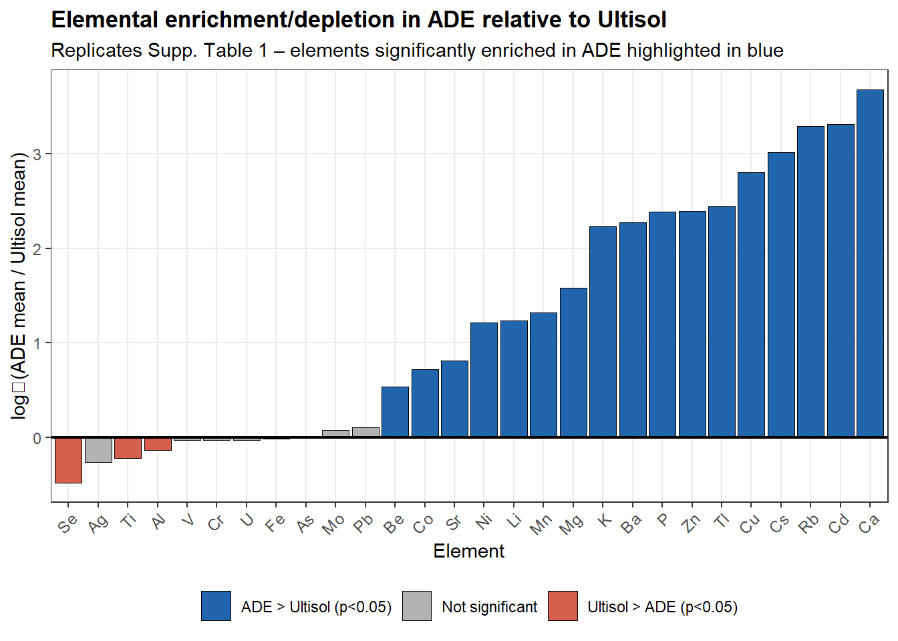
pca_input <- tot %>%
dplyr::select(soil_type, depth_cm, all_of(elem_cols)) %>%
filter(complete.cases(.))
pca_mat <- pca_input %>%
dplyr::select(all_of(elem_cols)) %>% as.matrix()
pca_res <- prcomp(pca_mat, scale. = TRUE)
pca_df <- as.data.frame(pca_res$x) %>%
bind_cols(pca_input %>%
dplyr::select(soil_type, depth_cm)) %>%
dplyr::mutate(depth_fac = factor(depth_cm, levels = sort(unique(depth_cm))))
var_exp <- summary(pca_res)$importance[2,] * 100
cat(sprintf("\n=== PCA: PC1=%.1f%%, PC2=%.1f%%, PC3=%.1f%% ===\n",
var_exp[1], var_exp[2], var_exp[3]))
=== PCA: PC1=55.9%, PC2=28.0%, PC3=5.1% ===figS1a <- ggplot(pca_df, aes(x = PC1, y = PC2,
colour = depth_fac, shape = soil_type)) +
geom_point(size = 2.5, alpha = 0.75) +
scale_colour_viridis_d(name = "Depth (cm)", option = "plasma",
direction = -1) +
scale_shape_manual(values = c("ADE"=16,"Ultisol"=17), name = "Soil type") +
labs(x = sprintf("PC1 (%.1f%%)", var_exp[1]),
y = sprintf("PC2 (%.1f%%)", var_exp[2]),
title = "A – PCA ordination (soil type × depth)") +
theme_ade
figS1a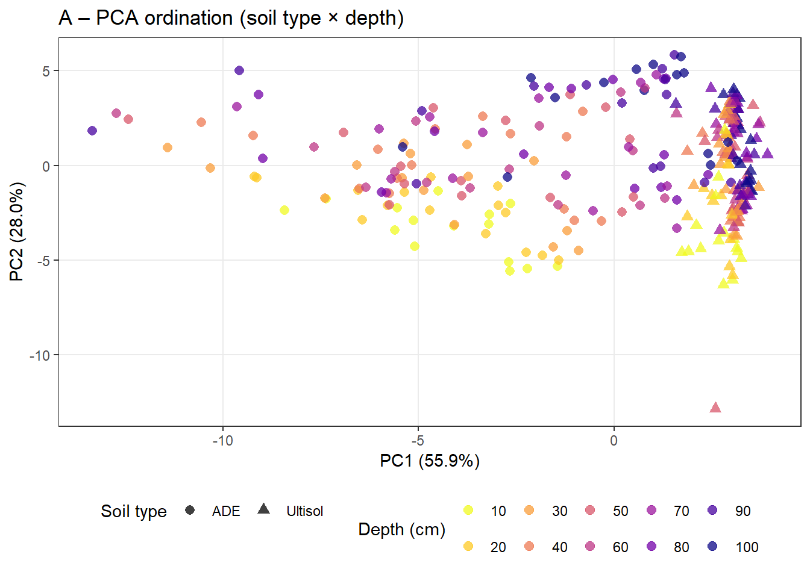
loadings_df <- as.data.frame(pca_res$rotation[, 1:2]) %>%
rownames_to_column("element") %>%
rename(PC1 = PC1, PC2 = PC2) %>%
mutate(PC1_sc = PC1 * 8, PC2_sc = PC2 * 8) # scale to ordination space
figS1b <- ggplot(loadings_df, aes(x = PC1_sc, y = PC2_sc)) +
# unit circle
annotate("path",
x = cos(seq(0, 2*pi, length.out = 200)) * 8,
y = sin(seq(0, 2*pi, length.out = 200)) * 8,
colour = "grey80", linewidth = 0.5) +
geom_segment(aes(x = 0, y = 0, xend = PC1_sc, yend = PC2_sc),
arrow = arrow(length = unit(0.18, "cm")),
colour = "#333333", linewidth = 0.5) +
geom_text_repel(aes(label = element), size = 3, colour = "#333333",
max.overlaps = 20) +
labs(x = sprintf("PC1 (%.1f%%)", var_exp[1]),
y = sprintf("PC2 (%.1f%%)", var_exp[2]),
title = "B – Element loadings") +
coord_fixed() +
theme_ade
figS1b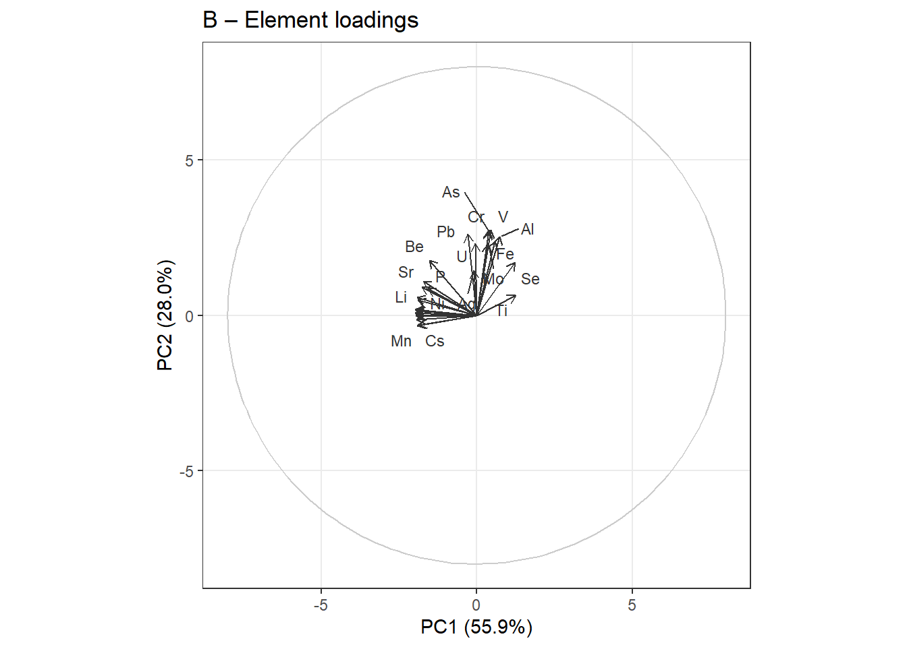
# Supplementary Figure 18
contrib_df <- as.data.frame(pca_res$rotation[, 1:3]^2) %>%
rownames_to_column("element") %>%
rename(PC1=PC1, PC2=PC2, PC3=PC3) %>%
pivot_longer(-element, names_to="PC", values_to="contribution") %>%
mutate(contribution = contribution * 100,
element = factor(element, levels = elem_cols))
contrib_df# A tibble: 84 × 3
element PC contribution
<fct> <chr> <dbl>
1 Mg PC1 5.99
2 Mg PC2 0.0100
3 Mg PC3 0.315
4 P PC1 4.86
5 P PC2 1.28
6 P PC3 0.567
7 K PC1 5.81
8 K PC2 0.0331
9 K PC3 0.288
10 Ca PC1 5.42
# ℹ 74 more rows#Figure S1c
figS1c <- ggplot(contrib_df, aes(x = element, y = contribution, fill = PC)) +
geom_col(position = "dodge", colour = "black", linewidth = 0.2) +
scale_fill_manual(values = c("PC1"="#d6604d","PC2"="#4dac26","PC3"="#2166ac")) +
labs(x = "Element", y = "Partial contribution (%)",
title = "C – Contribution of elements to top 3 PCs") +
theme_ade +
theme(axis.text.x = element_text(angle = 45, hjust = 1, size = 8))
figS1c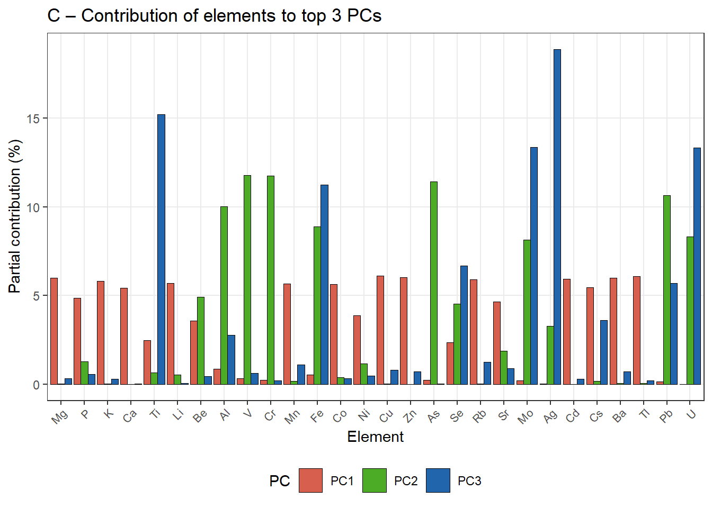
figS1 <- (figS1a | figS1b) / figS1c +
plot_annotation(
title = "Supplementary Figure 1 – PCA of total elemental concentrations (28 elements)",
subtitle = sprintf("PC1 = %.1f%%, PC2 = %.1f%%, PC3 = %.1f%%",
var_exp[1], var_exp[2], var_exp[3]),
theme = theme(plot.title = element_text(face = "bold", size = 12),
plot.subtitle = element_text(size = 9))
)
figS1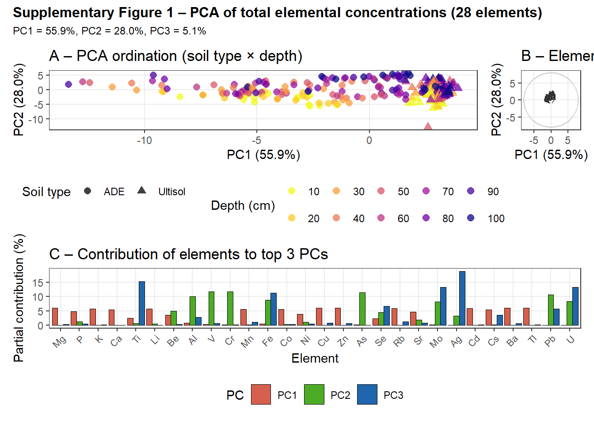
#Elements by ICP_MS
elem_summary <- tot %>%
group_by(soil_type, depth_cm) %>%
summarise(across(all_of(elem_cols),
list(mean = ~mean(.x, na.rm=TRUE),
sem = ~sd(.x, na.rm=TRUE)/sqrt(sum(!is.na(.x))))),
.groups = "drop") %>%
mutate(depth_mid = as.numeric(depth_cm) - 5)
elem_summary# A tibble: 20 × 59
soil_type depth_cm Mg_mean Mg_sem P_mean P_sem K_mean K_sem Ca_mean Ca_sem
<fct> <dbl> <dbl> <dbl> <dbl> <dbl> <dbl> <dbl> <dbl> <dbl>
1 ADE 10 406. 34.7 1244. 103. 498. 31.4 2108. 228.
2 ADE 20 395. 35.0 1353. 119. 551. 41.4 1604. 201.
3 ADE 30 411. 34.9 1684. 167. 634. 56.8 1498. 262.
4 ADE 40 380. 30.8 1825. 163. 583. 53.1 1406. 266.
5 ADE 50 334. 34.0 1846. 174. 535. 68.9 1308. 252.
6 ADE 60 309. 34.2 1872. 219. 503. 72.2 1276. 305.
7 ADE 70 296. 33.1 1780. 163. 452. 65.4 1153. 239.
8 ADE 80 254. 35.3 1673. 162. 400. 82.0 1005. 253.
9 ADE 90 258. 49.4 1825. 258. 446. 122. 1114. 374.
10 ADE 100 188. 21.6 1509. 130. 268. 56.4 593. 110.
11 Ultisol 10 102. 8.27 314. 31.6 100. 7.32 155. 34.5
12 Ultisol 20 115. 8.82 335. 34.1 109. 9.00 115. 25.5
13 Ultisol 30 107. 4.95 318. 28.0 102. 7.28 77.3 5.40
14 Ultisol 40 121. 10.0 360. 37.6 108. 5.88 108. 25.6
15 Ultisol 50 104. 9.72 301. 35.3 91.7 7.73 93.2 22.1
16 Ultisol 60 122. 10.3 346. 41.0 100. 7.29 124. 27.3
17 Ultisol 70 99.6 5.15 310. 26.3 99.2 8.91 73.4 5.35
18 Ultisol 80 103. 9.17 299. 33.1 98.5 10.9 88.2 20.0
19 Ultisol 90 109. 9.83 317. 36.2 122. 28.1 108. 26.5
20 Ultisol 100 102. 5.86 285. 26.0 105. 11.6 76.2 6.88
# ℹ 49 more variables: Ti_mean <dbl>, Ti_sem <dbl>, Li_mean <dbl>,
# Li_sem <dbl>, Be_mean <dbl>, Be_sem <dbl>, Al_mean <dbl>, Al_sem <dbl>,
# V_mean <dbl>, V_sem <dbl>, Cr_mean <dbl>, Cr_sem <dbl>, Mn_mean <dbl>,
# Mn_sem <dbl>, Fe_mean <dbl>, Fe_sem <dbl>, Co_mean <dbl>, Co_sem <dbl>,
# Ni_mean <dbl>, Ni_sem <dbl>, Cu_mean <dbl>, Cu_sem <dbl>, Zn_mean <dbl>,
# Zn_sem <dbl>, As_mean <dbl>, As_sem <dbl>, Se_mean <dbl>, Se_sem <dbl>,
# Rb_mean <dbl>, Rb_sem <dbl>, Sr_mean <dbl>, Sr_sem <dbl>, Mo_mean <dbl>, …#Plot for profiles
profile_plots <- map(elem_cols, function(el) {
mean_col <- paste0(el, "_mean")
sem_col <- paste0(el, "_sem")
sig_flag <- ttest_results$sig[ttest_results$Element == el]
ade_hi <- ttest_results$ADE_higher[ttest_results$Element == el]
col_ade <- if (!is.na(sig_flag) && sig_flag != "ns" && ade_hi) "#2166ac" else
if (!is.na(sig_flag) && sig_flag != "ns" && !ade_hi) "#d6604d" else "grey50"
ggplot(elem_summary, aes(x = .data[[mean_col]], y = depth_mid,
colour = soil_type, shape = soil_type)) +
geom_point(size = 1.8) + geom_path(linewidth = 0.5) +
geom_errorbarh(aes(xmin = .data[[mean_col]] - 2*.data[[sem_col]],
xmax = .data[[mean_col]] + 2*.data[[sem_col]]),
height = 1.5) +
scale_y_reverse(breaks = seq(5,95,20)) +
scale_colour_manual(values = pal) +
scale_shape_manual(values = c("ADE"=18,"Ultisol"=17)) +
labs(x = "mg kg⁻¹", y = NULL,
title = paste0(el, if (!is.na(sig_flag)) paste0(" (", sig_flag, ")") else "")) +
theme_bw(base_size = 8) +
theme(legend.position = "none",
plot.title = element_text(size = 8, face = "bold",
colour = col_ade),
axis.text = element_text(size = 6),
panel.grid.minor = element_blank())
})
fig_all_profiles <- wrap_plots(profile_plots, ncol = 7) +
plot_annotation(
title = "Depth profiles of all 28 elements (mean ± 2SE, n=15 per soil type per depth)",
subtitle = "Blue title = ADE significantly higher; red = Ultisol higher; *** p<0.001, ** p<0.01, * p<0.05",
theme = theme(plot.title = element_text(face = "bold", size = 11),
plot.subtitle = element_text(size = 8))
)
fig_all_profiles`height` was translated to `width`.
`height` was translated to `width`.
`height` was translated to `width`.
`height` was translated to `width`.
`height` was translated to `width`.
`height` was translated to `width`.
`height` was translated to `width`.
`height` was translated to `width`.
`height` was translated to `width`.
`height` was translated to `width`.
`height` was translated to `width`.
`height` was translated to `width`.
`height` was translated to `width`.
`height` was translated to `width`.
`height` was translated to `width`.
`height` was translated to `width`.
`height` was translated to `width`.
`height` was translated to `width`.
`height` was translated to `width`.
`height` was translated to `width`.
`height` was translated to `width`.
`height` was translated to `width`.
`height` was translated to `width`.
`height` was translated to `width`.
`height` was translated to `width`.
`height` was translated to `width`.
`height` was translated to `width`.
`height` was translated to `width`.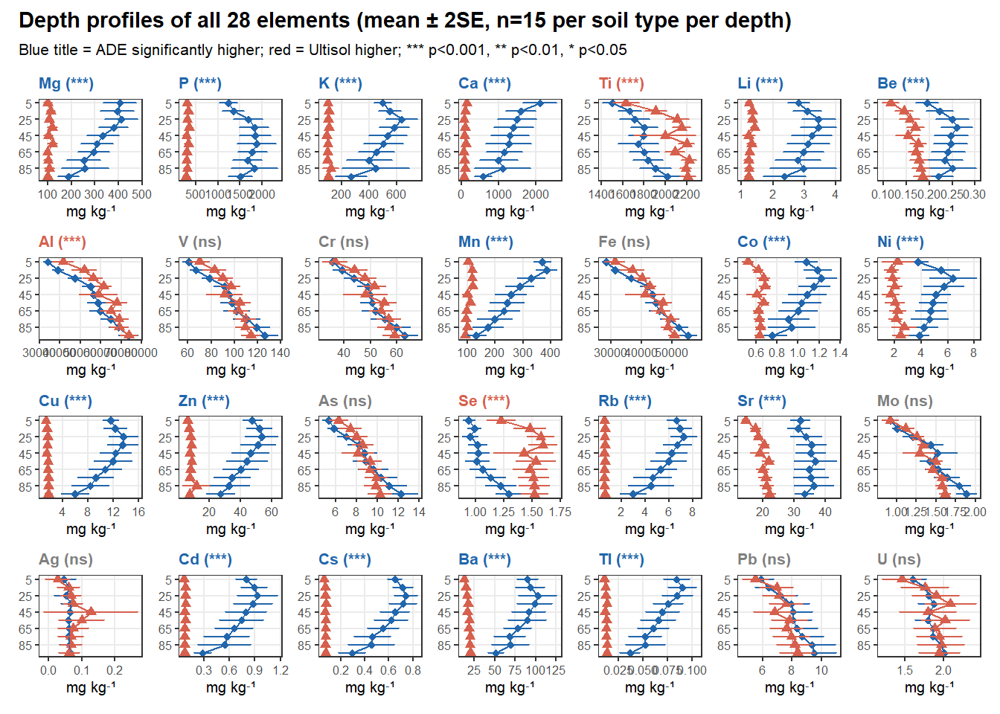
#Correlation in Supplementary Table 1
elem_mat <- tot %>%
dplyr::select(all_of(elem_cols)) %>%
as.matrix()
cor_mat <- cor(elem_mat, use = "pairwise.complete.obs")
#The visualization of cor_mat is too extensive, the visualization of this component was a real challenge.
#I tried to use the corrplot method, but the lack of tidy in the data was not easier to cross variables and make them visually efficient. alluvial_pairs <- list(
list(x="P", y="Sr", lab_x="Total P (mg kg⁻¹)", lab_y="Total Sr (mg kg⁻¹)"),
list(x="Ca", y="Sr", lab_x="Total Ca (mg kg⁻¹)", lab_y="Total Sr (mg kg⁻¹)"),
list(x="P", y="Ni", lab_x="Total P (mg kg⁻¹)", lab_y="Total Ni (mg kg⁻¹)"),
list(x="P", y="Rb", lab_x="Total P (mg kg⁻¹)", lab_y="Total Rb (mg kg⁻¹)"),
list(x="P", y="Zn", lab_x="Total P (mg kg⁻¹)", lab_y="Total Zn (mg kg⁻¹)"),
list(x="Ti", y="P", lab_x="Total Ti (mg kg⁻¹)", lab_y="Total P (mg kg⁻¹)")
)scatter_plots <- map(alluvial_pairs, function(pair) {
r_all <- cor(tot[[pair$x]], tot[[pair$y]], use="complete.obs")
r_ade <- cor(tot[[pair$x]][tot$soil_type=="ADE"],
tot[[pair$y]][tot$soil_type=="ADE"], use="complete.obs")
r_ult <- cor(tot[[pair$x]][tot$soil_type=="Ultisol"],
tot[[pair$y]][tot$soil_type=="Ultisol"], use="complete.obs")
ggplot(tot, aes(x=.data[[pair$x]], y=.data[[pair$y]],
colour=soil_type, shape=soil_type)) +
geom_point(size=2, alpha=0.6) +
geom_smooth(method="lm", se=FALSE, linewidth=0.8) +
scale_colour_manual(values=pal, name="Soil type") +
scale_shape_manual(values=c("ADE"=16,"Ultisol"=17), name="Soil type") +
annotate("text", x=-Inf, y=Inf,
label=sprintf("r(all)=%.2f\nr(ADE)=%.2f\nr(Ult)=%.2f",
r_all, r_ade, r_ult),
hjust=-0.1, vjust=1.2, size=2.8, colour="black") +
labs(x=pair$lab_x, y=pair$lab_y) +
theme_ade + theme(legend.position="none")
})
scatter_plots[[1]]`geom_smooth()` using formula = 'y ~ x'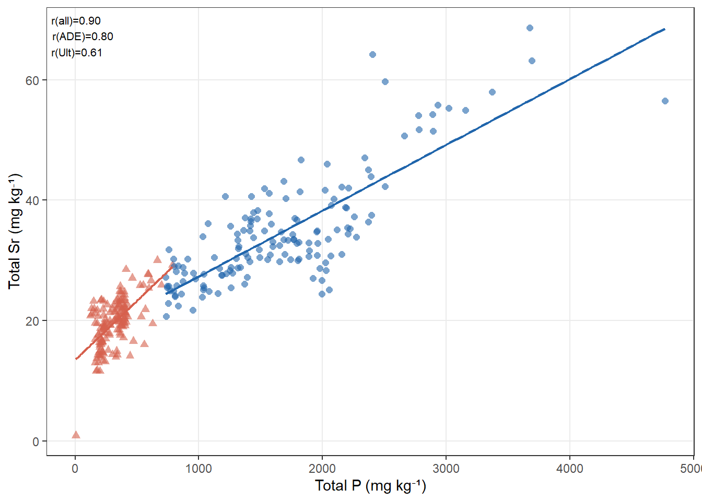
[[2]]`geom_smooth()` using formula = 'y ~ x'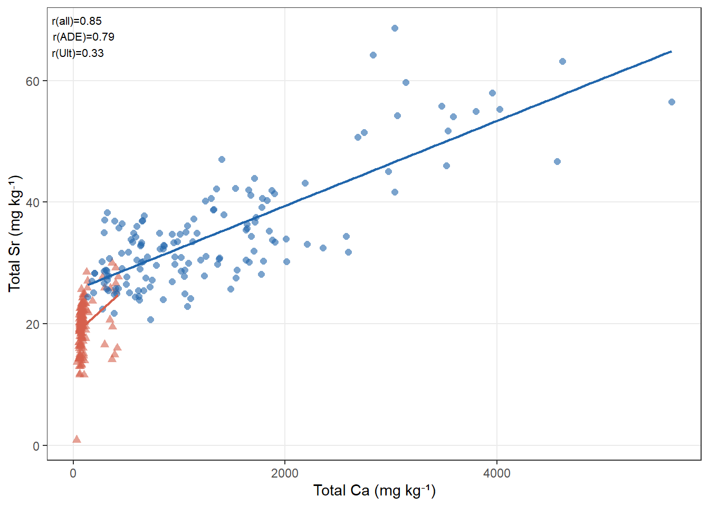
[[3]]`geom_smooth()` using formula = 'y ~ x'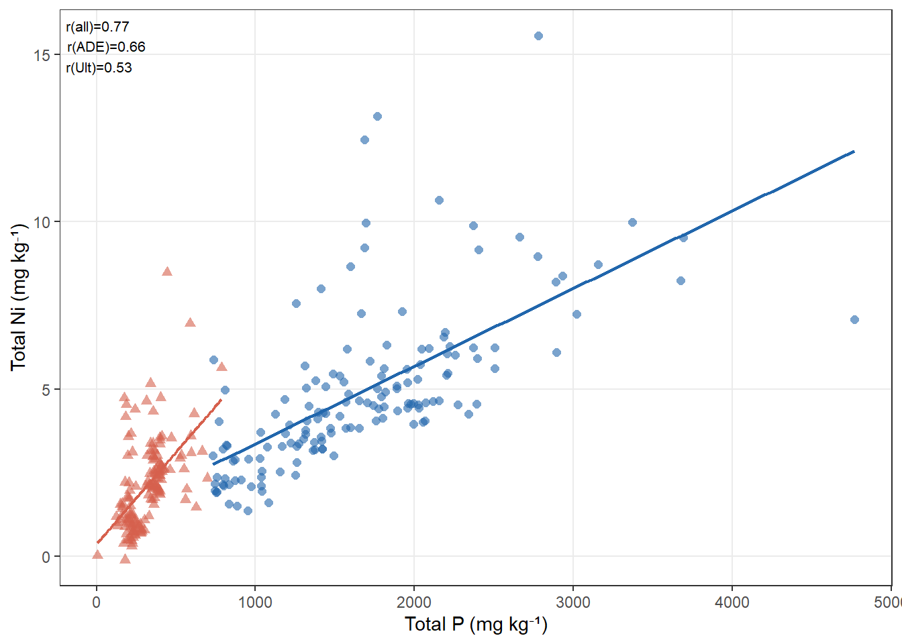
[[4]]`geom_smooth()` using formula = 'y ~ x'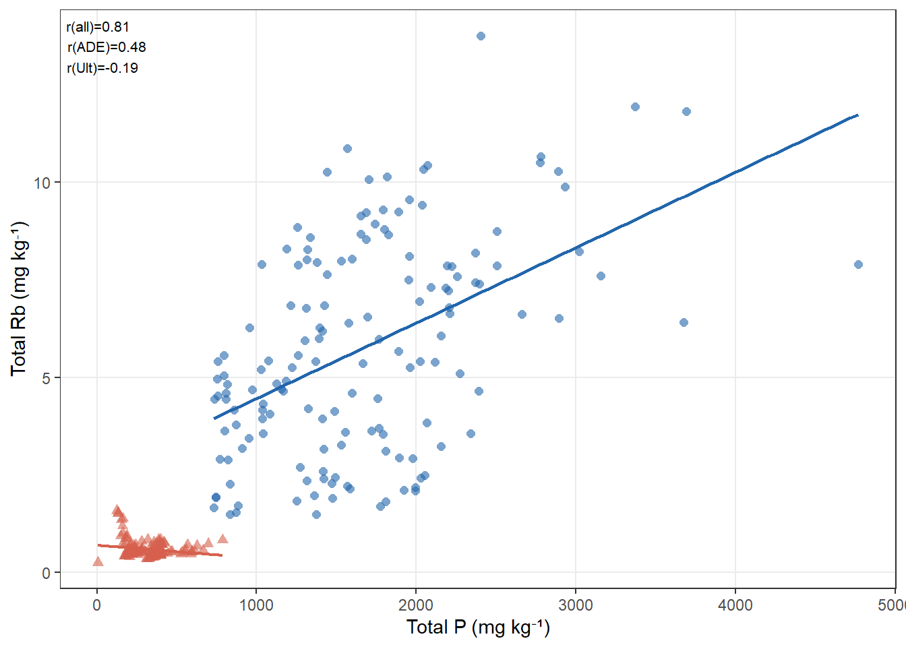
[[5]]`geom_smooth()` using formula = 'y ~ x'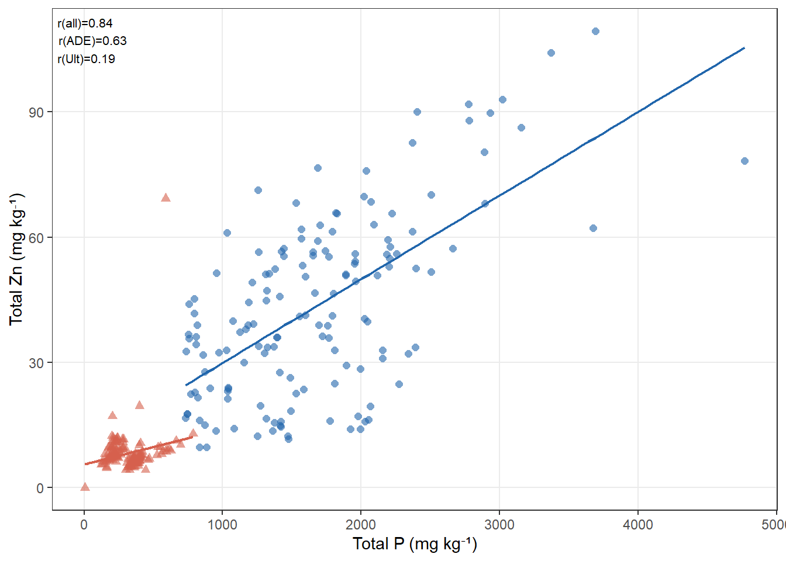
[[6]]`geom_smooth()` using formula = 'y ~ x'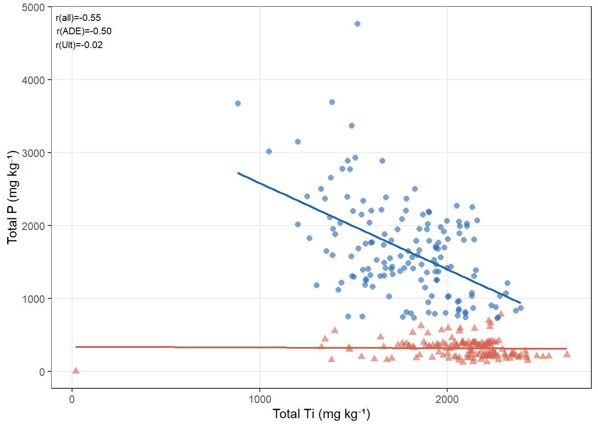
fig_alluvial <- wrap_plots(scatter_plots, ncol=3, guides="collect") +
plot_annotation(
title = "Alluvial indicator elements – P/Ca enrichment vs. exogenous trace elements",
subtitle = "Paper: 'Ni, Rb, Ti, Zn at same depths as enriched P and Ca match alluvial deposition'",
theme = theme(plot.title = element_text(face="bold", size=11),
plot.subtitle = element_text(size=8))
) & theme(legend.position="bottom")
fig_alluvial`geom_smooth()` using formula = 'y ~ x'
`geom_smooth()` using formula = 'y ~ x'
`geom_smooth()` using formula = 'y ~ x'
`geom_smooth()` using formula = 'y ~ x'
`geom_smooth()` using formula = 'y ~ x'
`geom_smooth()` using formula = 'y ~ x'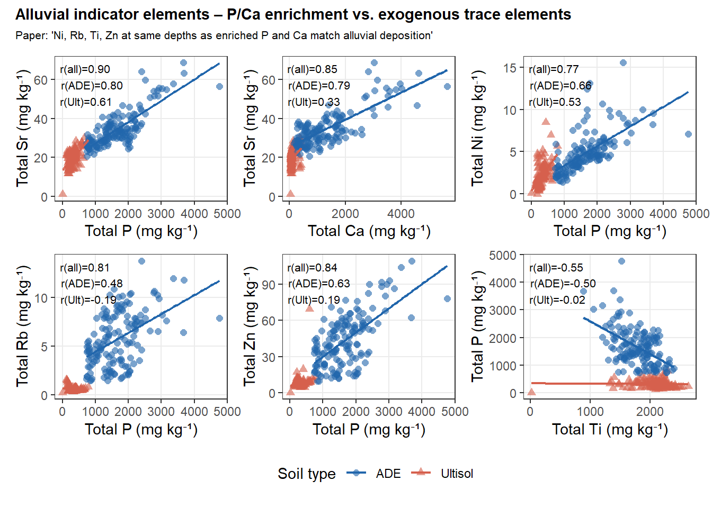
anova_results <- map_dfr(elem_cols, function(el) {
df_el <- tot %>%
dplyr::select(soil_type, depth_cm, val=all_of(el)) %>% dplyr::filter(!is.na(val))
mod <- aov(val ~ soil_type * factor(depth_cm), data=df_el)
sm <- summary(mod)[[1]]
tibble(
Element = el,
F_soil_type = sm$`F value`[1],
p_soil_type = sm$`Pr(>F)`[1],
F_depth = sm$`F value`[2],
p_depth = sm$`Pr(>F)`[2],
F_interaction = sm$`F value`[3],
p_interaction = sm$`Pr(>F)`[3],
sig_soil_type = case_when(sm$`Pr(>F)`[1]<0.001~"***",sm$`Pr(>F)`[1]<0.01~"**",
sm$`Pr(>F)`[1]<0.05~"*", TRUE~"ns"),
sig_depth = case_when(sm$`Pr(>F)`[2]<0.001~"***",sm$`Pr(>F)`[2]<0.01~"**",
sm$`Pr(>F)`[2]<0.05~"*", TRUE~"ns")
)
}) %>% arrange(p_soil_type)
cat("\n=== Two-way ANOVA results for all 28 elements ===\n")
=== Two-way ANOVA results for all 28 elements ===print(anova_results %>%
dplyr::select(Element, F_soil_type, p_soil_type, sig_soil_type,
F_depth, p_depth, sig_depth), n=28)# A tibble: 28 × 7
Element F_soil_type p_soil_type sig_soil_type F_depth p_depth sig_depth
<chr> <dbl> <dbl> <chr> <dbl> <dbl> <chr>
1 Cs 678. 8.79e-77 *** 5.17 1.67e- 6 ***
2 Rb 630. 1.20e-73 *** 4.33 2.70e- 5 ***
3 Cu 606. 5.68e-72 *** 3.82 1.42e- 4 ***
4 P 592. 4.76e-71 *** 1.69 9.12e- 2 ns
5 Tl 475. 3.14e-62 *** 4.32 2.81e- 5 ***
6 Ba 467. 1.23e-61 *** 2.28 1.76e- 2 *
7 Zn 407. 1.54e-56 *** 2.51 9.00e- 3 **
8 Mn 386. 1.33e-54 *** 12.9 3.34e-17 ***
9 Mg 358. 5.20e-52 *** 4.76 6.49e- 6 ***
10 Sr 331. 2.14e-49 *** 2.14 2.61e- 2 *
11 Cd 322. 1.86e-48 *** 3.24 9.23e- 4 ***
12 K 299. 4.03e-46 *** 2.16 2.51e- 2 *
13 Li 274. 2.23e-43 *** 1.28 2.49e- 1 ns
14 Co 228. 4.21e-38 *** 3.18 1.12e- 3 **
15 Se 220. 3.72e-37 *** 3.91 1.06e- 4 ***
16 Ca 218. 7.39e-37 *** 2.64 6.04e- 3 **
17 Ni 162. 1.19e-29 *** 0.856 5.65e- 1 ns
18 Be 128. 9.46e-25 *** 3.11 1.38e- 3 **
19 Ti 100.0 2.53e-20 *** 11.3 4.80e-15 ***
20 Al 27.5 3.17e- 7 *** 42.9 8.71e-48 ***
21 Mo 6.90 9.09e- 3 ** 37.1 6.97e-43 ***
22 Pb 3.97 4.73e- 2 * 4.98 3.13e- 6 ***
23 Ag 1.32 2.52e- 1 ns 0.812 6.05e- 1 ns
24 Cr 1.16 2.82e- 1 ns 22.2 2.49e-28 ***
25 V 1.09 2.97e- 1 ns 28.2 1.25e-34 ***
26 Fe 0.496 4.82e- 1 ns 51.6 2.20e-54 ***
27 U 0.471 4.93e- 1 ns 2.27 1.80e- 2 *
28 As 0.0644 8.00e- 1 ns 17.9 2.28e-23 *** cat("Saved: Table_ANOVA_28_elements.csv\n")Saved: Table_ANOVA_28_elements.csvregline_pyc <- lm(depth_mid ~ PyC_g_kg, data=carbon %>% filter(soil_type=="ADE", !is.na(PyC_g_kg)))
regline_c4 <- lm(depth_mid ~ C4_pct, data=carbon %>% filter(soil_type=="ADE"))
figS2_pyc <- ggplot(carbon %>% filter(!is.na(PyC_g_kg)),
aes(x=PyC_g_kg, y=depth_mid, colour=soil_type, shape=soil_type)) +
geom_point(size=3) +
geom_smooth(data=carbon %>% filter(soil_type=="ADE", !is.na(PyC_g_kg)),
method="lm", se=FALSE, colour="#2166ac") +
scale_y_reverse() +
scale_colour_manual(values=pal) +
scale_shape_manual(values=c("ADE"=18,"Ultisol"=17)) +
annotate("text", x=1.7, y=80,
label=sprintf("R² = %.2f", summary(regline_pyc)$r.squared),
size=3.5, colour="#2166ac") +
labs(x="Pyrogenic C (g kg⁻¹)", y="Depth (cm)", title="A – Pyrogenic carbon") +
theme_ade + theme(legend.position="none")
figS2_c4 <- ggplot(carbon, aes(x=C4_pct, y=depth_mid,
colour=soil_type, shape=soil_type)) +
geom_point(size=3) +
geom_smooth(data=carbon %>% filter(soil_type=="ADE"),
method="lm", se=FALSE, colour="#2166ac") +
scale_y_reverse() +
scale_colour_manual(values=pal) +
scale_shape_manual(values=c("ADE"=18,"Ultisol"=17)) +
annotate("text", x=17, y=80,
label=sprintf("R² = %.2f", summary(regline_c4)$r.squared),
size=3.5, colour="#2166ac") +
labs(x="C4-derived OC (%)", y=NULL, title="B – C4 grass contribution") +
theme_ade + theme(legend.position="bottom")
figS2 <- (figS2_pyc | figS2_c4) +
plot_annotation(title="Supplementary Fig. 2 – PyC and C4 regressions with depth",
theme=theme(plot.title=element_text(face="bold")))
figS2`geom_smooth()` using formula = 'y ~ x'
`geom_smooth()` using formula = 'y ~ x'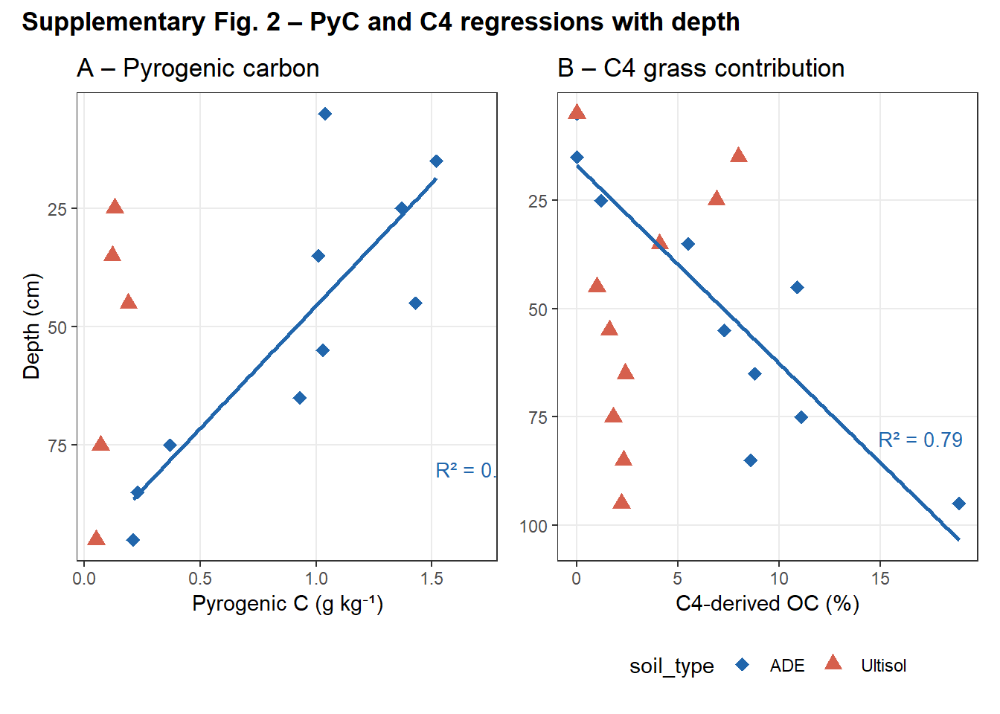
iso_plot_depth <- isotopes %>%
filter(!is.na(Sr87_86)) %>%
mutate(depth_mid = case_when(
grepl("^0", depth_cm) ~ 5, grepl("^10", depth_cm) ~ 15,
grepl("^20", depth_cm) ~ 25, grepl("^30", depth_cm) ~ 35,
grepl("^40", depth_cm) ~ 45, grepl("^50", depth_cm) ~ 55,
grepl("^60", depth_cm) ~ 65, grepl("^70", depth_cm) ~ 75,
grepl("^80", depth_cm) ~ 85, grepl("^90", depth_cm) ~ 95,
TRUE ~ NA_real_))
make_iso_depth <- function(st, fill_c) {
ggplot(iso_plot_depth %>% filter(soil_type==st),
aes(x=Sr87_86, y=depth_mid)) +
geom_point(colour=fill_c, size=3) +
geom_smooth(method="lm", se=TRUE, colour=fill_c,
fill=adjustcolor(fill_c, alpha.f=0.2)) +
scale_y_reverse() +
labs(x="⁸⁷Sr/⁸⁶Sr", y="Depth (cm)", title=st) + theme_ade
}
make_iso_nd_sr <- function(st, fill_c) {
df <- iso_plot_depth %>% filter(soil_type==st, !is.na(Nd143_144))
ggplot(df, aes(x=Sr87_86, y=Nd143_144)) +
geom_point(colour=fill_c, size=3) +
geom_smooth(method="lm", se=TRUE, colour=fill_c,
fill=adjustcolor(fill_c, alpha.f=0.2)) +
labs(x="⁸⁷Sr/⁸⁶Sr", y="¹⁴³Nd/¹⁴⁴Nd", title=st) + theme_ade
}
figS4 <- (make_iso_depth("ADE","#2166ac") | make_iso_depth("Ultisol","#d6604d") |
make_iso_nd_sr("ADE","#2166ac") | make_iso_nd_sr("Ultisol","#d6604d")) +
plot_annotation(
title="Supplementary Fig. 4 – Sr isotopes vs depth and Nd vs Sr",
theme=theme(plot.title=element_text(face="bold")))
figS4`geom_smooth()` using formula = 'y ~ x'
`geom_smooth()` using formula = 'y ~ x'
`geom_smooth()` using formula = 'y ~ x'
`geom_smooth()` using formula = 'y ~ x'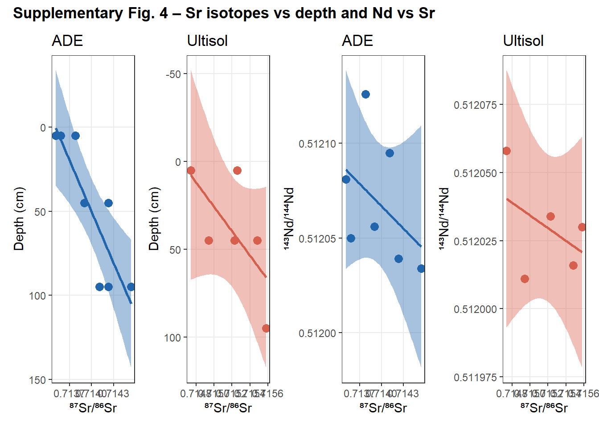
stats_isotopes <- stocks %>%
group_by(soil_type) %>%
summarise(Mean_Ca=mean(avg_Ca_mg_kg,na.rm=TRUE), SD_Ca=sd(avg_Ca_mg_kg,na.rm=TRUE),
Mean_P =mean(avg_P_mg_kg, na.rm=TRUE), SD_P =sd(avg_P_mg_kg, na.rm=TRUE),
n=n(), .groups="drop")
write_csv(stats_isotopes, "Table_descriptive_P_Ca.csv")
stats_total <- tot %>%
group_by(soil_type) %>%
summarise(across(all_of(elem_cols),
list(mean=~mean(.x,na.rm=TRUE), sd=~sd(.x,na.rm=TRUE))),
.groups="drop")
cat("Saved: Table_descriptive_P_Ca.csv and Table_descriptive_28_elements.csv\n")Saved: Table_descriptive_P_Ca.csv and Table_descriptive_28_elements.csvstats_isotopes# A tibble: 2 × 6
soil_type Mean_Ca SD_Ca Mean_P SD_P n
<chr> <dbl> <dbl> <dbl> <dbl> <int>
1 ADE 1306. 400. 1661. 221. 10
2 Ultisol 102. 25.7 318. 22.7 10stats_total# A tibble: 2 × 57
soil_type Mg_mean Mg_sd P_mean P_sd K_mean K_sd Ca_mean Ca_sd Ti_mean Ti_sd
<fct> <dbl> <dbl> <dbl> <dbl> <dbl> <dbl> <dbl> <dbl> <dbl> <dbl>
1 ADE 323. 149. 1661. 676. 487. 277. 1306. 1038. 1781. 288.
2 Ultisol 108. 32.7 318. 127. 104. 45.9 102. 87.0 2073. 292.
# ℹ 46 more variables: Li_mean <dbl>, Li_sd <dbl>, Be_mean <dbl>, Be_sd <dbl>,
# Al_mean <dbl>, Al_sd <dbl>, V_mean <dbl>, V_sd <dbl>, Cr_mean <dbl>,
# Cr_sd <dbl>, Mn_mean <dbl>, Mn_sd <dbl>, Fe_mean <dbl>, Fe_sd <dbl>,
# Co_mean <dbl>, Co_sd <dbl>, Ni_mean <dbl>, Ni_sd <dbl>, Cu_mean <dbl>,
# Cu_sd <dbl>, Zn_mean <dbl>, Zn_sd <dbl>, As_mean <dbl>, As_sd <dbl>,
# Se_mean <dbl>, Se_sd <dbl>, Rb_mean <dbl>, Rb_sd <dbl>, Sr_mean <dbl>,
# Sr_sd <dbl>, Mo_mean <dbl>, Mo_sd <dbl>, Ag_mean <dbl>, Ag_sd <dbl>, …This article examines one of the most important debates in Amazonian Archaeological research, the Terra Preta, with a examination of one site with intensive geochemical analysis and radiocarbon dating. The purpose of Silva,et. al. (2021) was to present an alternative explanation to the origin of Terra Preta as product of alluvial deposition instead of a product of indigenous inventiveness millenia before the European conquest.
The manage of data presents interesting incorporation of analysis to construct an argument in favor of his proposal: a not-anthropogenic explanation to the ADE (Amazonian Dark Earths). The geochemical characterization explains the enrichment of the ADE in P, Ca, Sr, Nd, and other elements that the presence of C compose the stock of Terra Preta. However, his research is limited to one site and the authors are calling to the debate of a sustained research tradition in ADE for the last decades.
Between the conclusions based on the data analysis replication, I would like to precise in following quotes:
Mapping with R (See Figure 2 in 04. Reference Profiles)
Silva, et. al, presents a map in which the measures the concentrations of P and Ca by the depth. In that matter, our excercise permitted to create maps based on the quantitative results of the file 2 or dataset d2. However, the method failed in accuracy due to the points were related to georreferenced coordinates that were not delimited by polygon such as shown in Silva, et. al. (2021). In that order the chart shows non delimited buffers that are not reflecting the same visualization than the article. A solution to this problem could be the combination of GIS tools + R geolibraries. In this case, I decided not to go deeper in this mapping exercise and concentrate in the quantitative graphs.
Math and graphs in a versatil way
The article was published in Nature Communications. This journal has a high audience and a high rate of citations. However, their articles are brief and concrete due to their publication norms. In that order, the use of data visualization could help articles to get published or rejected. In this case the use of linear scatterplots with error rates and statistical references strengthen the publication. In the case of this replication, R permitted me to reproduce all the charts. The visualization is optimal and present high quality to publications. However, there is a great efffort in the connection of datasets (three in this article) and its analysis in statistical charts and graphic visualizations. It is noticeable that the incorporation of statistical predictions such ANOVA permitted him to estimate hypotheses to argue an alternative origin of ADE. In the precise case of fishing consumption, his calculation according to estimated rates of P in fresh and dry fish, its quantity and the time needed to generate ADE as a cultural processes is mathematically correct, but limited to their data. Possibily, Silva et. al (2021) data could have a different error margin and SE if compared with other datasets using the same tools (t-statistics, ANOVA, etc. )
Tidy data
One of the problems I found was the representation of datasets in a numeric way. In the Supplementary data, Silva, et. al. (2021) present a table with correlations between 28 chemical elements. However, the table’s font size is too small to have a good visualization. Possibility, the table shows a necessary piece of data but it is visually non-efficient. When I deployed the data in R it was unmanageable (see Supplementary Table 1: Correlation Heatmap in chunk 18). My current knowledge in coding did not allow me to reproduce this table, however, the data was considered to reproduce the other graphic products and some statistical exercises. The dataset 3 presented a conflict between two columns and it demanded to edit it to solve a possible table plot. In that case, the attempts to tidy the data were not fruitful, but it is a great excercise to comprehend the importance of building understandable, comprehensible and tidy data sets for our analysis.
Data Analysis in R
R is a powerful analytical tool, it permits to manage great datasets and explore them in a dynamic way. I found that the construction of ordered lines is the secret to accurate analysis. The exploration of packages and their respective tools demand of a constant update. In that case, my interest is to keep practicing and exploring data analysis replication to understand the data management as a crucial component of scientific work. My focus, is to review how the current scholarship is working their data and presentation to replicate analysis and discuss my own research in the most appropriate way. Finally, ADE is my research interest and most of its scholarship is based in quantitative analysis, I found R and statistical analysis in R, gitHub and other resources the start of a shift in my own academic pathway and a great incorporation to Anthropological, Geographical and Archaeological research.